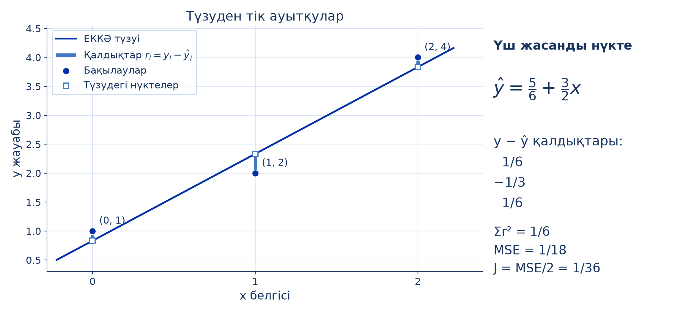
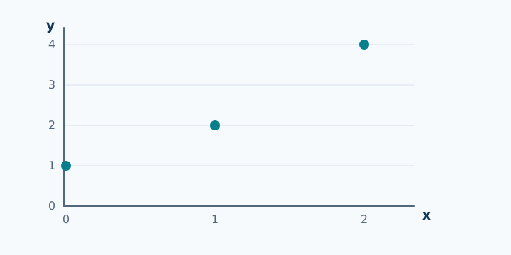
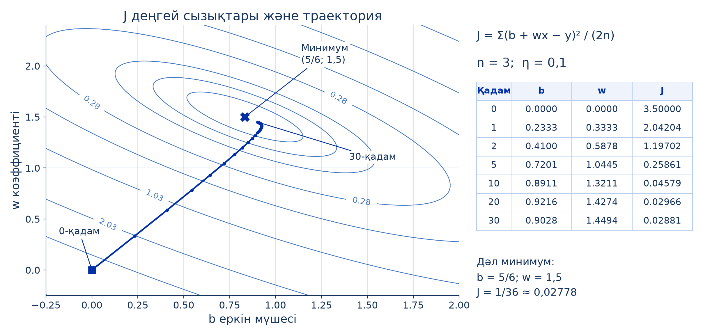
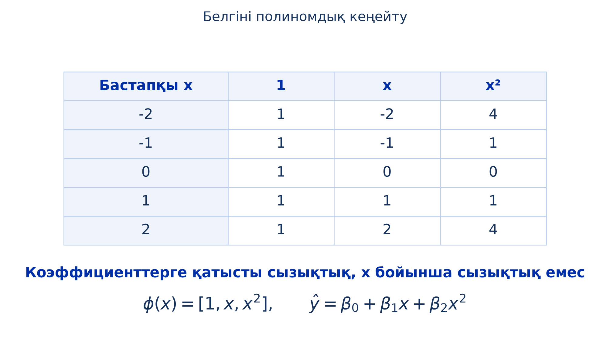
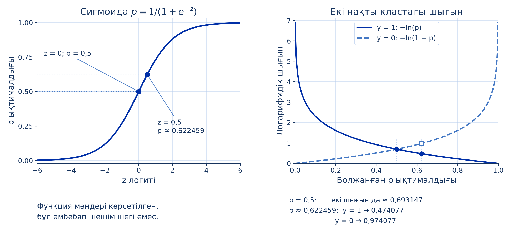
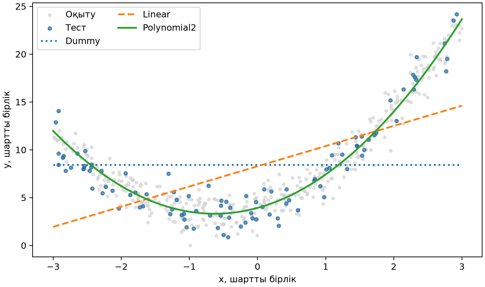
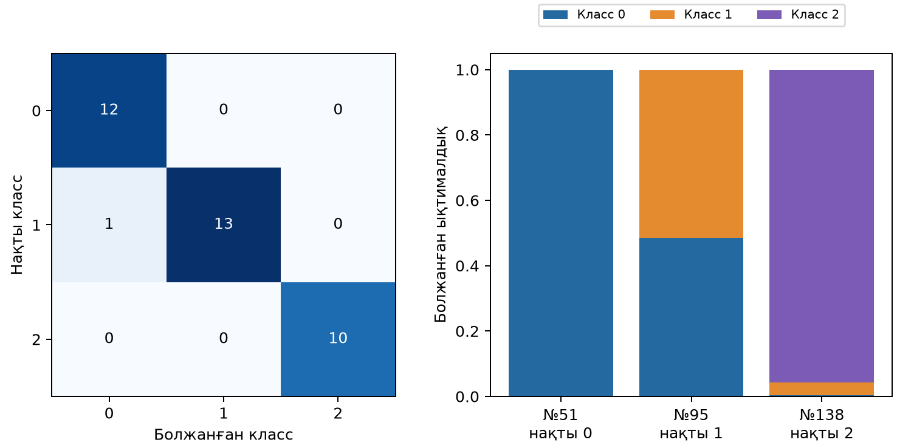

3-тарау. Сызықтық модельдер: сызықтық, полиномдық және логистикалық регрессия.
3.1 Тақырыпқа бағдар
Сызықтық модель болжамды белгілердің салмақталған қосындысымен байланыстырады. Осы қарапайым құрылым оқытудың негізгі мәселелерінің барлығын дерлік егжей-тегжейлі зерттеуге мүмкіндік береді. Нақты не оңтайландырылады, шешім неліктен жалғыз болмауы мүмкін, параметрлер қалай өзгереді және деректермен жақсы үйлесу сенімді болжамнан қалай ажыратылады деген сұрақтар қарастырылады. Полиномдық белгілер белгісіз коэффициенттерге қатысты сызықтылықты сақтай отырып, тәуелділіктің пішінін кеңейтеді. Логистикалық регрессия класс ықтималдығын модельдеу үшін сызықтық предикторды қолданады.
Тараудың мақсаты — сызықтық, полиномдық және логистикалық модельдердің формулаларын қорытып шығару, оларды оқыту және нәтижесін мазмұнды бағалау. Тарауды меңгерген студент жоспар матрицасын жаза алады, қалыпты теңдеулерді және квадраттық функцияның градиентін қорытып шығарады, оңтайландырудың бір қадамын тексереді, шешімнің жалғыз болу шарттарын түсіндіреді, полиномдық көрініс құрады және сандық болжамды категория ықтималдығынан ажыратады. Практикалық жұмыс 2-тараудағы деректерді дайындауға сүйене отырып, силлабустың 2.2 индикаторын ашады.
Алғышарттар — матрица мен вектордың көбейтіндісі, транспозициялау, бір айнымалы функцияның туындысы, орташа мән және дисперсия. Негізгі көпөлшемді өрнектер координаталар бойынша қорытып шығарылады, сондықтан оларды матрицалық формулаларды жатқа білуге сүйенбей тексеруге болады. Бағдарламалық тәжірибелер үшін Pipeline, StandardScaler және деректерді дұрыс бөлу қажет.
Негізгі ұғымдар — коэффициент, еркін мүше, жоспар матрицасы, қалдық, ең кіші квадраттар әдісі, қалыпты теңдеулер, ранг, шарттылық, градиент, оқыту жылдамдығы (learning rate), полиномдық базис, логит, сигмоида (sigmoid) және логарифмдік шығын (log-loss). Оқу жоспары шағын регрессия есебін қолмен шешуден сандық әдістерге, одан кейін полиномдық белгілер мен ықтималдыққа негізделген жіктеуге өтеді. Зертханалық жұмыс осы бөліктерді нәтижесін қайта алуға болатын екі тәжірибеге біріктіреді.
3.2 Сызықтық тәуелділік және ең кіші квадраттар әдісі
p кіріс белгісі бойынша сандық жауапты болжау қажет болсын. Параметрлерге қатысты сызықтық модель жекелеген үлестерді қосады. Олар еркін мүшеден және әр белгінің өз коэффициентіне көбейтіндісінен тұрады. Мұндағы «сызықтық» сөзі белгісіз коэффициенттерге қатысты. Белгілердің өзі бастапқы өлшемдердің алдын ала анықталған күрделі функциялары болуы мүмкін. Кейін полиномдық модельді құруға дәл осы мүмкіндік негіз болады.
X матрицасында бастапқы кіріс координаталары берілген. A матрицасына алғашқы баған ретінде бірліктер қосылған, сондықтан оның p+1 бағаны бар. θ векторына β₀ еркін мүшесі және қалған p коэффициент кіреді. Белгілеулерді осылай ажырату жиі кездесетін қатенің алдын алады. Ол — бірліктер бағанын қолмен қосып, бағдарламалық модельде еркін мүшені қайта қосу. Оқу мақсатындағы математикалық жазбада еркін мүше A құрамына енгізілген, ал кітапхана интерфейсінде оның өңделуін модель баптауы анықтайды.
βⱼ коэффициенті қалған кіріс координаталары өзгермегенде xⱼ бір бірлікке артса, болжамның қалай өзгеретінін сипаттайды. Оның өлшем бірлігі жауаптың өлшем бірлігін белгінің өлшем бірлігіне бөлу арқылы анықталады. Алайда мұндай түсіндіру өздігінен себептік түсіндіруге айналмайды. Температура маусыммен және пайдалану режимімен байланысты болуы мүмкін. Бақылау деректері кестесіндегі коэффициент қолжетімді белгілер мен таңдалған модель пішінін ескереді. Ол температураны дәл осынша өзгертетін физикалық араласу есептелген әсерді беретінін дәлелдемейді.
Еркін мүше енгізілген барлық белгінің координаталары нөлге тең болғандағы болжамға тең. Кейде мұндай нысанның мағынасы бар, кейде ол оқыту аймағынан алыс жатады. Сондықтан еркін мүшенің үлкен не теріс мәнін центрлеу тәсілі мен деректер ауқымынан бөлек бағалауға болмайды. Сол сияқты байланысты белгі қосылғанда жеке коэффициенттің таңбасы өзгеруі мүмкін, ал жалпы болжау тәуелділігі жақсаруы немесе дерлік өзгеріссіз қалуы ықтимал.
Болжам қатесін eᵢ=ŷᵢ−yᵢ деп белгілейік. Ең кіші квадраттар әдісі (ordinary least squares, OLS) қателер квадраттарының қосындысын ең аз ететін параметрлерді таңдайды. Әрі қарай оны ЕККӘ деп қысқартамыз. Дифференциалдауға ыңғайлы болуы үшін орташа квадраттың жартысын қолданамыз.
1/2 көбейткіші минимумның орнын өзгертпейді, бірақ J сандық мәнін өзгертеді және градиенттегі екіні қысқартады. 1-тарауда эмпирикалық тәуекел тікелей орташа квадраттық қате, MSE (mean squared error), түрінде жазылған. Сондықтан формулаларды салыстырғанда алдымен нормалау коэффициентін тексеру қажет. Деректердің бірдей қатесі үшін J=MSE/2 болуы мүмкін. Оқыту жылдамдығы да атауы бір әдіске дербес қатысты емес, нақты анықталған градиентке қатысты таңдалады.
Квадрат үлкен қателердің әсерін арттырады. Абсолюттік қате екі есе өссе, оның үлесі төрт есе артады. Квадратты азайту есептеуге ыңғайлы, бірақ шеткі бақылауларға сезімтал. Үлкен ауытқу расталған сирек оқиға болса, оны ЕККӘ-ге ыңғайлы болу үшін автоматты түрде алып тастауға болмайды. Егер бұл дерек беру қатесі болса, деректерді түзету қажет. Орнықты шығын функциялары мен регуляризация келесі тарауларда қарастырылады. Мұнда таңдалған критерийдің қандай қателерге басымдық беретінін түсіну маңызды.
Есептеу есебін қою үшін қателер қалыпты үлестірілген деп жорамалдау қажет емес. Рұқсат етілген сандардан тұратын кез келген ақырлы кестеде J мәнін азайтуға болады. Ықтималдық тұрғысынан түсіндіру мен бағалардың қасиеттері деректер туралы қосымша жорамалдарды талап етеді. Мысалы, шудың шартты орташа мәні нөлге тең модельдің мағынасы жүйелі түрде ескерілмеген сызықтық емес факторды сипаттаудан өзгеше. fit функциясының сәтті аяқталғанына ғана сүйеніп, статистикалық кепілдіктерді кез келген кестеге таратуға болмайды.

Дереккөз: x=(0,1,2), y=(1,2,4) үшін авторлық есептеу.
3.1-суреттегі тік кесінділер жауаптар мен түзудегі нүктелер арасындағы айырманы көрсетеді. ЕККӘ осы тік ауытқулардың квадраттары қосындысын азайтады. Бұл түзуге дейінгі ең қысқа геометриялық қашықтықтардың қосындысы емес. Кәдімгі регрессия жауап осін бөліп қарастырады және кірістерді болжам жасауға берілген шамалар деп қабылдайды. Ғылыми есепте кіріс координаталарының өлшеу қателері елеулі болса, бақылаудың басқа моделі қажет болуы мүмкін.
3.2.1 Бір айнымалы үшін қолмен есептеу
Үш нүктеге түзу сәйкестендіру
3.2.1-мысалдағы ең кіші квадраттар әдісі. Әр қалдық нүктенің нақты мәні мен түзу болжаған мәннің тік айырмасын көрсетеді.

Үш оқу нүктесі берілген: (0, 1), (1, 2), (2, 4). Мақсат — y мәнін x бойынша түзу арқылы болжау.
Барлық қадамның мәтіні
- Бақылаулар — Үш оқу нүктесі берілген: (0, 1), (1, 2), (2, 4). Мақсат — y мәнін x бойынша түзу арқылы болжау.
- Сәйкестендірілген түзу — Ең кіші квадраттар әдісі w = 3/2 және b = 5/6 береді. Түзудің теңдеуі ŷ = 5/6 + (3/2)x.
- Қалдықтар — Тараудағы ŷ − y белгілеуімен қалдықтар −1/6, 1/3 және −1/6. Олардың орташа мәні нөлге тең.
- Қате өлшемі — Квадратталған қалдықтардың қосындысы 1/6. Үш нүктеге бөлгенде орташа квадраттық қате MSE = 1/18 шығады.
x=[0,1,2] және y=[1,2,4] мәндерін қарастырайық. Орташа мәндер 1 және 7/3. b+wx моделіндегі көлбеулік коэффициенті центрленген мәндер көбейтінділерінің қосындысын центрленген кірістер квадраттарының қосындысына бөлу арқылы анықталады. Біздің мысалда алым (−1)(−4/3)+0(−1/3)+1(5/3)=3, ал бөлім —1+0+1=2. Демек, w=3/2, ал b=7/3−3/2=5/6.
3.1-кесте нәтижені бағдарламалық кітапханасыз тексеруге мүмкіндік береді. Алдымен x мәнін табылған түзуге қоямыз, содан кейін нақты жауапты шегереміз, тек одан кейін ауытқуды квадраттаймыз. Таңбалы қателерді олардың квадраттарымен шатастыру орташа қате нөлге тең деген қате қорытындыға жиі әкеледі.
Кесте 3.1. Жасанды бақылауларда ЕККӘ шешімін тексеру
| x | y | b+wx болжамы | Қате және оның квадраты |
|---|---|---|---|
| 0 | 1 | 5/6 | −1/6; квадраты 1/36 |
| 1 | 2 | 7/3 | 1/3; квадраты 1/9 |
| 2 | 4 | 23/6 | −1/6; квадраты 1/36 |
Квадраттар қосындысы 1/6, MSE=1/18≈0,05556, ал 3.2-формуладағы J мәні 1/36≈0,02778. Үш бақылаудың да ауытқуы нөлден өзгеше болса да, орташа таңбалы қате нөлге тең. Еркін мүшесі бар модельде бұл теңдік train жиынындағы оңтайлылық шартымен байланысты. Ол қателердің жоқ екенін білдірмейді және жаңа іріктемедегі қалдықтың орташа мәні нөл болатынына кепілдік бермейді.
Бір белгі және тұрақты емес x үшін шешімді бірнеше қосынды арқылы O(n) операциямен есептеуге болады. Бірақ осындай шағын мысалдың өзі түсіндіру шектеулерін көрсетеді. Үш нүкте барлық мүмкін x мәні үшін сызықтылықты растамайды. x=100 кезіндегі болжам алыс экстраполяцияның нәтижесі болар еді, оған мұнда бақылау деректеріне негізделген дәлел жоқ. Алдымен қолдануға болатын аймақты анықтап, содан кейін сәйкес деректерде жаңа сапаны бағалау қажет.
3.3 Қалыпты теңдеулер, ранг және сандық шешім
Бірнеше белгі үшін минимум шартын қорытып шығарайық. Бір нысанның J функциясына қосатын үлесі сызықтық қате квадратының 1/(2n) көбейткішіне көбейтіндісіне тең. θⱼ коэффициенті бойынша дифференциалдағанда қатенің туындысы aᵢⱼ болады. Сондықтан градиенттің координатасы қатенің жоспар матрицасының сәйкес бағанына көбейтіндісінің орташа мәніне тең.
Дөңестікті тексеру үшін өлшемі сәйкес кез келген v векторын алайық. vᵀHv квадраттық формасы ||Av||²/n шамасына тең және теріс емес. Демек, J дөңес. Стационарлық нүкте табылса, ол жаһандық минимум болады. A бағандары тәуелсіз болғанда кез келген нөлден өзгеше v үшін қатаң оң мән алынады. Бұл жағдайда минимум жалғыз.
Градиентті нөлге теңестіріп, жақшаларды ашсақ, қалыпты теңдеулерді аламыз.
Қолмен есептелген мысалда AᵀA матрицасының жолдары (3,3) және (3,5), ал Aᵀy векторының координаталары 7 және 10. Жүйе 3b+3w=7 және 3b+5w=10 түріне келеді. Екінші теңдіктен біріншісін шегергенде 2w=3 шығады. Оны орнына қойсақ, b=5/6 аламыз. Бұл бұрын центрлеу арқылы табылған шешіммен бірдей. Есептеудің екі түрі бірін-бірі тексереді.
A бағандары сызықтық тәуелсіз болса, AᵀA матрицасы қайтымды және шешімді формалды түрде былай жазуға болады.
3.5-формула математикалық шешімді сипаттайды, бірақ бағдарламада кері матрицаны тікелей есептеуге ұсыныс болып саналмайды. Сандық әдістер әдетте жүйені немесе бастапқы ең кіші квадраттар есебін жіктеулер арқылы шешеді. QR-жіктеу ортогонал бағыттарды үшбұрышты жүйеден бөледі. SVD сингуляр бағыттарды көрсетіп, рангті зерттеуге көмектеседі. Бұл әдістер сандық орнықтылықты бақылауға мүмкіндік береді және нәтижені бөлек құрылған кері матрицаға көбейтуді талап етпейді.
Қалыпты теңдеулерді қорытып шығару ыңғайлы, бірақ AᵀA матрицасын тікелей құру шарттылық мәселелерін күшейтеді. Толық ранг жағдайында стандартты евклидтік норма бойынша осы матрицаның шарттылық саны A матрицасының шарттылық санының квадратымен байланысты. Кіріс бағандары тәуелділікке жақын болса немесе масштабтары өте өзгеше болса, дөңгелектеу коэффициенттерді едәуір өзгертуі мүмкін. Осыдан 2-тараумен байланыс шығады. Белгілердің келісілген көрінісі есептің геометриясы үшін де, оның сандық шешімі үшін де маңызды.
Бағандардың сызықтық тәуелділігі параметрлерді деректер бойынша бірмәнді анықтауға мүмкіндік бермейді. Мысалы, екінші белгі үнемі біріншісінің екі есесіне тең болса, болжам β₁+2β₂ комбинациясына тәуелді болады. (1,0) және (−1,1) коэффициент жұптары осындай барлық нысанда бірдей үлес береді. Тек квадратты азайту нәтижесінде жалғыз жұп алынады деп күтуге негіз жоқ. Модельдің оқыту болжамдары бірмәнді анықталып, сол болжамдарды беретін коэффициенттер жиыны бірнешеу болуы мүмкін.
p+1>n болса, A матрицасының толық бағандық рангке ие болуы мүмкін емес. Бұл бақылаулардың статистикалық тәуелсіздігі туралы тұжырым емес, матрица өлшеміне қойылатын шектеу. Белгілер саны аз болғанда да қайталанған бағандар, толық сөздігі және еркін мүшесі бар one-hot кодтау немесе құрылған өзара әсерлер тәуелділікті тудыруы мүмкін. Псевдокері матрица (pseudoinverse) бір шешімді, мысалы ЕККӘ шешімдерінің ішінен евклидтік нормасы ең азын таңдауға мүмкіндік береді. Мұндай таңдауды белгілердің себептік әсері туралы жаңа деректердің пайда болуы емес, математикалық ереже анықтайды.
ЕККӘ шешіміндегі y−Aθ̂ қалдығы A матрицасының әр бағанына ортогонал. Бұл — қалыпты теңдеулердің басқа жазылуы. Сандық мысалда оның координаталары 1/6,−1/3,1/6. Олардың қосындысы нөлге тең, ал x бағанымен көбейтіндісі 0·1/6+1·(−1/3)+2·1/6=0. Бұл тексерулер есептеу қатесін табуға көмектеседі, бірақ олар оқыту шешімі мен таңдалған белгілер кеңістігіне қатысты.
n≥p болатын тығыз кестеде ең кіші квадраттар есебін тікелей шешудің әдеттегі құны O(np²+p³) шамалас. Нақты жіктеу мен матрица пішініне қарай бұл баға нақтыланады. Нысандар саны өте көп не белгілер сирек болғанда итерациялық әдістер ыңғайлырақ болуы мүмкін. Белгілер дайындалғаннан кейін сызықтық модельде бір нысанға болжам жасауға әдетте O(p) операция жеткілікті. Сондықтан оқыту тәсілін таңдауды табылған коэффициенттерді кейін қолдану құнымен араластырмаған жөн.
Сандық шешімнің сапасы мен модель сапасы бөлек тексеріледі. Қалыпты теңдеулердің шағын қалдығы таңдалған оңтайландыру есебінің шешілгенін растайды. Ол сызықтық модельдер тобының пәндік тәуелділікке сәйкес екенін, іріктеменің өкілді екенін немесе белгілердің болжам сәтінде қолжетімді екенін дәлелдемейді. Кейінгі бөлімдер осы тексеру тәртібін сақтай отырып, параметрлерді итерациялық жолмен іздеуді және белгілер кеңістігін өзгертуді көрсетеді.
3.4 Оқытудың градиенттік әдістері
Қалыпты теңдеулер шешімнің қайда орналасқанын көрсетеді, бірақ оны алудың жалғыз тәсілі емес. Бақылаулар не белгілер көп болғанда параметрлерді біртіндеп жақсарту ыңғайлы. Градиент J функциясының жергілікті өсу бағытын көрсетеді. Қолайлы қадаммен қарсы бағытта қозғалу функцияны азайтады. Дифференциалданатын квадраттық есепте бағыт 3.3-формула бойынша дәл есептеледі.
Алдымен бастапқы коэффициенттер таңдалады. Одан кейін барлық оқыту жолы бойынша болжамдар, қателер және градиент есептеледі. Барлық жаңа коэффициент бір ғана бұрынғы күйден анықталады. Жаңартудан кейін алдын ала қойылған тоқтау шарты тексеріледі немесе белгіленген қадам санына жеткенше есептеу жалғасады. Бір мезгілде жаңартуды жекелеген координаталарды кезекпен қайта есептеумен білдіртпей алмастыруға болмайды. Бұл траекториясы өзгеше басқа алгоритм болады.
Бұрыннан таныс x=[0,1,2], y=[1,2,4] кестесінде бір қадамды көрсетейік. Бастапқыда b=w=0, болжамдар нөлге тең, қателер −1, −2 және −4. Квадраттар қосындысы 21, сондықтан MSE=7, ал J=21/6=3,5. J функциясының еркін мүше бойынша туындысы (−1−2−4)/3=−7/3. Көлбеулік бойынша туындысы (0·(−1)+1·(−2)+2·(−4))/3=−10/3.
η=0,1 деп алайық. Бір мезгілде b_new=7/30≈0,23333 және w_new=1/3≈0,33333 аламыз. Жаңа болжамдар 7/30, 17/30 және 9/10. Қателер −23/30, −43/30 және −31/10. Олардың квадраттарының қосындысы 11027/900. Демек, J_new=11027/5400≈2,04204, ал MSE_new=11027/2700≈4,08407. Оқыту қатесі азайды, бірақ оңтайлы b=5/6, w=3/2 мәндеріне әлі алыс.
Мұнда 1/2 көбейткішін жоғалтпау ерекше маңызды. MSE тікелей оңтайландырылса, градиент екі есе үлкен болады. Сол сандық η мәнінде қадам да өзгереді. Сондықтан нәтижесін қайталауға болатын әдіс сипаттамасында «градиенттік түсу» атауымен қатар дәл мақсат функциясы, оның нормалануы, жаңарту ережесі, бастапқы күй және қадам кестесі беріледі.

Дереккөз: үш жасанды бақылау үшін авторлық есептеу, J=Σқате²/(2n), η=0,1.
3.2-суреттегі деңгей сызықтары b және w әртүрлі болғанда J функциясының бірдей мәндерін көрсетеді. Дәл минимум бөлек белгіленген. Шектеулі қадамнан кейінгі траекторияның соңғы нүктесі минимуммен міндетті түрде сәйкес келмейді. Деңгей сызықтарының созылыңқылығы қозғалыстың бір бағытта жылдам, басқа бағытта баяу болуының себебін түсіндіреді. Белгілерді нормалау коэффициенттер кеңістігіндегі осы геометрияны өзгертіп, оңтайландыруды жылдамдатуы мүмкін.
H матрицасы оң анықталған квадраттық есепте тұрақты қадам мына шектеу орындалғанда жинақталады.
Параметр қатесін H матрицасының меншікті бағыттары бойынша жіктеу бұл шартты түсінуге көмектеседі. Меншікті мәні λ болатын бағытта қате әр қадамда 1−ηλ шамасына көбейеді. Модуль азаюы үшін осы көбейткіш −1 мен 1 арасында жатуы тиіс. Бір шектеуді барлық бағытпен келісу керек, жоғарғы шекті ең үлкен λ анықтайды. Бұл шарт қарастырылып отырған квадраттық функцияға қатысты. Ол кез келген нейрондық желіге жарайтын қауіпсіз қадамның әмбебап формуласы емес.
Тым үлкен қадам тербеліске немесе J өсуіне әкеледі. Тым кіші қадам минимумнан алыс болғанда да дерлік байқалмайтын өзгеріс береді. Сондықтан бір қадамдағы функция өзгерісінің аздығы өздігінен жинақталуды дәлелдемейді. Градиент нормасын, параметрлер өзгерісін және есептеу бюджетінің шегін бақылау пайдалы. Болжау есебінде осы есептеу критерийлеріне жалпылауды тексеру қосылады. Валидация бойынша ерте тоқтату 6-тарауда қарастырылады.
Тығыз матрица үшін градиентті толық бір рет есептеу O(np) операцияны қажет етеді. Белгілерді дайындау құнын есептемегенде, T қадам O(Tnp) шамалас операцияға әкеледі. Қажетті қадам саны координаталар масштабына, шарттылыққа, талап етілетін дәлдікке және әдіс таңдауына тәуелді. Сондықтан «итерациялық тәсіл жылдамырақ» деген тұжырым есептің нақты өлшемі мен салыстыру критерийін талап етеді.
3.4.1 Стохастикалық және шағын пакетпен жаңарту
Толық градиент — жекелеген бақылаулар үлестерінің орташа мәні. Бағытты кездейсоқ бір нысан немесе шағын топ арқылы бағалауға болады. Орташа квадраттың жартысы үшін бір нысанның градиентке қосатын үлесі мына түрде жазылады.
Әр қадамда индекс бірқалыпты үлестірімнен және алдыңғы тарихтан тәуелсіз таңдалса, ағымдағы параметрлер бекітілгендегі gᵢ шартты математикалық күтімі толық градиентке тең. Бұл стохастикалық жуықтаудың негізін түсіндіреді. Практикалық бағдарламаларда нысандар жиі араластырылып, бір дәуірде әрқайсысы бір рет өңделеді. Мұндай ұйымдастыру ыңғайлы, бірақ оны ескертусіз әр қадамдағы тәуелсіз таңдаулар жорамалымен алмастыруға болмайды.
Стохастикалық қадам толық қадамнан арзан, бірақ кездейсоқ тербелісті қамтиды. Бір жаңартудан кейін бүкіл іріктемедегі J артуы мүмкін. Бұл міндетті түрде іске асыру қатесі емес. Оқыту жылдамдығы тұрақты болғанда параметрлер шешім маңында тербелуі мүмкін. Қадамды азайту жуықтау сипатын өзгертеді. Кездейсоқ сандар генераторын бақылау және қадам кестесін сипаттау қажет. Әдістерді бір жаңарту құны бойынша ғана емес, қол жеткізген дәлдік пен жалпы есептеу шығыны бойынша салыстырған жөн.
B шағын пакеті (mini-batch) бірнеше үлесті орташалайды. Оның өлшемі бағыттың өзгергіштігіне, жад қажеттілігіне және параллель есептеу мүмкіндігіне әсер етеді. Таңдау сызбасы қолайлы болса, үлкенірек пакет әдетте шуы аз бағалау береді, бірақ оны өңдеу қымбатырақ. Кішірек пакет түпкілікті сапаның жақсы болатынына кепілдік бермейді. «Дәуір» (epoch) термині деректерді толық бір рет өңдеумен салыстырмалы көлемді білдіреді. Алгоритмнің барлық түрінде ол бір қадаммен бірдей емес.
Іске асыру кезінде еркін мүше мен салмақтарды жаңартуды келісу, жауап векторының пішінін шатастырмау, test жиынын оқыту ағынына қоспау және белгілердің бір ретін сақтау маңызды. Стандарттау оңтайландырғышты жылдамдату үшін қолданылса да, оның параметрлері train бойынша бағалануы тиіс. Әйтпесе есептеу тұрғысынан жылдам алгоритм хаттамасы бұзылған есепті шешеді.
3.5 Полиномдық белгілер және тәуелділік пішіні
Параметрлерге қатысты сызықтылық бастапқы x бойынша түзу болуды талап етпейді. Матрицаға x² енгізілсе, модель квадраттық белгіге арналған қосымша коэффициент алады. Бір кіріс үшін d дәрежелі полином алдын ала анықталған дәрежелердің салмақталған қосындысы ретінде жазылады. Коэффициенттер болжамға бұрынғыша сызықтық түрде кіреді, сондықтан алдыңғы бөлімдердегі әдістер жаңа жоспар матрицасына да қолданылады.
Формуланың бірінші бөлігі бір сандық кірістің белгілерін анықтайды. Екінші бөлігі p кіріс үшін қосынды дәрежесі d шамасынан аспайтын барлық мономның санын, соның ішінде тұрақтыны береді. Екі кіріс және 2 дәреже үшін алты координата алынады: 1, x₁, x₂, x₁², x₁x₂ және x₂². Тұрақтыны модель бөлек өңдесе, оны түрлендіруге екінші рет қосу қажет емес. Үш кіріс және дәл осы дәреже үшін тұрақтыны қоса есептегендегі координаталар саны 10.
x₁x₂ өзара әсері (interaction) бір белгінің үлесі екінші белгіге байланысты өзгеруі мүмкін екенін көрсетеді. Мысалы, жұмыс ұзақтығы мен жүктеменің байланысы әртүрлі температурада өзгеше болуы мүмкін. Алайда формуладағы өзара әсердің болуы нақты физикалық механизмді дәлелдемейді. Ол қолжетімді функциялар тобын кеңейтеді. Мазмұнды түсіндіру үшін деректер мен пәндік білім қажет.

Дереккөз: x шамасын (1,x,x²) түріне бейнелеудің авторлық кестесі.
3.3-суретте бір бастапқы мәннен бірнеше координата пайда болады. x=−2 болса, (1,−2,4), ал x=2 болса, (1,2,4) аламыз. Квадраттық координата бірдей, ал сызықтық координата өзгеше. Әртүрлі коэффициенттер арқылы модель симметриялы және бағытталған үлесті біріктіре алады. Мұнда нысанның жаңа өлшемі алынған жоқ, тек қолда бар ақпараттың көрінісі өзгерді.
Сәйкес белгілердің толық жиыны қолданылса, дәрежесі жоғары полиномдар тобы дәрежесі төмен топты қамтиды. Сондықтан регуляризациясыз ЕККӘ дәл шешілгенде оқытудағы квадраттар қосындысының ең аз мәні өсе алмайды. Жаңа коэффициенттерге әрқашан нөл беруге болады. Бұл — train жиынындағы оптимум туралы тұжырым. Жаңа нысандардағы қате үшін мұндай реттілік жоқ. Қосымша икемділік шуға бейімделіп, болжамды нашарлатуы мүмкін.
Дәреже — гиперпараметр (hyperparameter). Оны қорытынды test жиынындағы ең аз қате бойынша таңдасақ, сол test таңдауға қатысады. Зерттеу үшін валидациялық жиын (validation set) бөлінеді немесе әзірлеу деректері, development, ішінде айқас тексеру (cross-validation, CV) жүргізіледі. Тәуелсіз бағалауға дейін іздеу кеңістігі, таңдау ережесі және оқытудың түпкілікті рәсімі бекітіледі. Оқу салыстыруында алдын ала анықталған бірнеше модельді көрсетуге болады. Бірақ кейін тест кестесіндегі ең жақсы жолды іріктеу рәсімінің тәуелсіз бағасы деп жариялауға болмайды.
Жоғары дәрежелер сандық қиындық туғызады. x=100 болғанда x пен x⁸ шамалары бірнеше реттік шамаға ерекшеленеді. Дәрежелік базистің көршілес бағандары күшті байланысты болуы мүмкін. Бағандарды масштабтау олардың шамаларындағы айырманы азайтады, бірақ сызықтық тәуелділікке жақындықты автоматты түрде жоймайды. Бастапқы координатаны центрлеу, басқа базис таңдау және регуляризация пайдалы болуы мүмкін. Алайда әр шешім келісілген оқыту мен тексеруді талап етеді.
Түрлендірулердің реті де маңызды. Бастапқы x шамасын дәрежеге шығарудан бұрын масштабтау және дайын дәрежелік бағандарды масштабтау әртүрлі сандық координата жасайды. Сәйкес толық базис үшін регуляризациясыз дәл модель бірдей функциялар кеңістігін сипаттауы мүмкін. Бірақ есептеудің шектеулі дәлдігі мен коэффициент айыптары практикалық нәтижені өзгертеді. Сондықтан есепте «полиномдық регрессия» деген сөз тіркесі ғана емес, Pipeline конвейерінің өзі сақталады.
Координаталар саны p және d өскенде тез артады. Түрлендіруде қарастырылса, тіпті 2 дәреже де барлық жұптық өзара әсерді қосады. Бұл жад пен оқыту құнын арттырады. Белгілерді жасамас бұрын матрицаның күтілетін өлшемін есептеп, осындай функциялар тобын зерттеуге тәуелсіз бақылаулар жеткілікті ме екенін тексеру пайдалы. Дәрежені автоматты түрде өте жоғарыға көтеру пайдалы тәуелділік пішіні туралы гипотезаны алмастырмайды.
Экстраполяция бөлек сақтықты талап етеді. Полином аралық ішіндегі оқыту нүктелерінен дәл өтіп, одан тыс жерде күрт өсуі мүмкін. Сол ауқымнан кездейсоқ бөлінген нысандардағы сәттілік ауқым шекарасынан тыс сенімділікті растамайды. Қолданбалы шешімде болжам тексерілген кірістер аймағын нақты анықтап, одан шығу жағдайындағы әрекетті қарастыру қажет.
3.6 Регрессиялық шешімді түсіндіру және диагностикалау
Коэффициенттер табылғаннан кейін зерттеу жалғасады. Болжамдар мен жауаптарды салыстырып, қалдықтарды зерттеңіз және үлкен қателер кірістер аймағының қай бөлігінде туатынын тексеріңіз. Қалдықтардың x бойынша жүйелі қисықтығы тәуелділік пішінінің жеткіліксіздігін көрсетуі мүмкін. Болжам өскенде шашыраудың артуы өзгергіштіктің біркелкі еместігін білдіруі мүмкін. Мұндай графиктер жалғыз себепті автоматты түрде анықтамайды, диагностикалық сұрақтар туғызады.
Қателерді талдау модельді өзгерту үшін қолданылса, сәйкес деректер іс жүзінде әзірлеуге қатысады. Сондықтан таңдалған хаттама аясында келесі жақсартуды іздеу үшін validation жиынын зерттеуге болады. Ал тәуелсіз test бойынша шешімді қайта-қайта түзету оның қорытынды тексеру рөлін жұмсайды. Бекітілген шешімнің қателерін сипаттау мен баптаудың жаңа циклін ажырату керек.
DummyRegressor-мен салыстыру белгілердің тұрақты болжамға қарағанда беретін пайдасын көрсетеді. MSE үшін табиғи оқу базалық моделі (baseline model) — train орташа мәні, ал MAE үшін — train медианасы. Сызықтық модель деректерді жақсы сипаттағанның өзінде бірнеше үлкен ауытқу MAE және RMSE мәндеріне әрқалай әсер етуі мүмкін. Сондықтан әр санның жанында өлшем бірлігі, формула және бөлу сценарийі беріледі. R² коэффициенті де дұрыс болжамдардың үлесі немесе сапаның әмбебап пайызы емес.
Коэффициенттердің мағынасы көрініске тәуелді. Стандартталған белгінің коэффициенті бастапқы физикалық бірліктің біреуіне емес, координатаның бір оқыту масштабына өзгеруіне сәйкес келеді. x² коэффициенті x коэффициентімен бірге түсіндіріледі. Болжамның шекті өзгерісі ағымдағы x мәніне тәуелді. Әртүрлі шкаладағы коэффициенттердің модульдерін жай салыстыру жаңылыстыруы мүмкін. Модельдерді егжей-тегжейлі түсіндіру 10-тарауда қарастырылады.
Ақырында, кластарды санмен жазу жіктеуді регрессияға айналдырмайды. Түрлер 0,1,2 кодтарымен жазылса, осы кодтар бойынша квадратты азайту категориялар арасында жасанды қашықтық енгізеді. Сызықтық болжамды дөңгелектеу негізді ықтималдық моделін жасамайды. Екі кластың өзінде кәдімгі сызықтық функция нөлден кіші не бірден үлкен сандар беруі мүмкін. Келесіде сызықтық предикторды ықтималдықпен байланыстыратын және сәйкес шығын функциясымен оқытылатын логистикалық модельді қарастырамыз.
3.7 Логистикалық регрессия және класс ықтималдығы
3.7–3.8-бөлімдерінде d әрпі кіріс белгілерінің санын білдіреді. Тараудың бастапқы белгілеулеріндегі p-мен байланысы d=p түрінде жазылады. Бірліктер бағанымен толықтырылған X̃ матрицасы A жоспар матрицасымен бірдей. Мұндай белгілеу i нысанының класс ықтималдығын pᵢ арқылы бөлек көрсетуге мүмкіндік береді.
Логистикалық регрессия атауы тәуелділікті статистикалық модельдеумен байланысын сақтайды, бірақ машиналық оқытуда оның әдеттегі қолданылуы — жіктеу. Екілік есепте y жауабы 0 және 1 мәндерін қабылдайды. Белгілі белгілер бойынша оң кластың шартты ықтималдығын бағалап, содан кейін есептің қойылымы талап етсе, ықтималдықты шешімге түрлендіру керек. Бұл екі әрекет өзгеше. Модель жауаптың белгісіздігін сипаттайды, ал шешім ережесі класс таңдаудың салдарын ескереді.
Бағалаудан бұрын оң кластың нақты нені білдіретінін анықтау қажет. Ақауды табу есебінде оған әдетте ақау тағайындалады. Бірақ бағдарламалық белгі мен оқиғаның қолданбалы маңыздылығы автоматты түрде сәйкес келе бермейді. Екі жауаптың кодтарын ауыстырсақ, ықтималдық пен коэффициент таңбаларының түсіндірмесі өзгереді. Бұл қарама-қарсы заңдылықтың ашылуы емес, бір екілік айырманы сипаттаудың өзгеруі. Кластың мазмұндық мағынасы есеп паспортында белгілерді дайындау ережелерімен және болжам уақытымен бірге сақталады.
Кәдімгі сызықтық функция нөл мен бір арасымен шектелмейді, сондықтан оны қосымша шартсыз ықтималдық деп түсіндіруге болмайды. Логистикалық модель ықтималдықты тікелей модельдеудің орнына шанс қатынасының логарифмін сызықтық түрде сипаттайды. p ықтималдығында оқиға шансы (odds) p/(1−p) шамасына тең. Ол оқиға ықтималдығын оған қарама-қарсы нәтиже ықтималдығымен салыстырады. Шанс ықтималдықтың өзі емес және бірден артық болуы мүмкін. Оны осылай анықтау үшін 0 < p < 1 жағдайын қарастырамыз.
Шанс логарифмі логит (logit) деп аталады. Оны белгілердің аффиндік функциясына теңестірсек, таныс сигмоиданы аламыз.
Бұл ауысуды тікелей қорытып шығаруға болады. z логиті-ке тең болғандықтан, p/(1−p) = exp(z). Екі жағын 1−p шамасына көбейтіп, p бар мүшелерді бір жаққа жинасақ, p[1+exp(z)] = exp(z) аламыз. Бөлгенде p = exp(z)/[1+exp(z)], яғни (3.10) формуласындағы өрнек шығады. Демек, сигмоида графигі ықтималдық аралығына ыңғайлы орналасқаны үшін ғана таңдалмайды, шанс логарифмі туралы нақты жорамалдан туындайды.
z = 0 болғанда шанс бірге, ал ықтималдық бірдің жартысына тең. Оң логит бірдің жартысынан үлкен, теріс логит одан кіші ықтималдыққа сәйкес келеді. z артқанда ықтималдық бірге, ал кемігенде нөлге біртіндеп жақындайды. Параметрлер мен белгілер ақырлы болғанда математикалық сигмоида осы шеткі мәндерге дәл жетпейді. Оның туындысы p(1−p) болғандықтан, ықтималдықтың логит өзгерісіне сезімталдығы орталық аймақта ең жоғары болып, аралық шеттеріне жақындаған сайын азаяды.
Бұл сызықтылықтың маңызды айырмасын түсіндіреді. Басқа белгілер бекітілгенде бір белгінің бір бірлікке өзгеруі логитті тұрақты w_j коэффициентіне өзгертеді. Бұл кезде шанс exp(w_j) шамасына көбейеді. Ықтималдық өзгерісі тұрақты емес, бастапқы логитке және сигмоидадағы орынға тәуелді. Сондықтан коэффициентті кез келген нысан үшін бірдей пайыздық пункт саны деп түсіндіруге болмайды. Түсіндіру белгінің шкаласына да тәуелді. Стандартталған координатаның бір бірлігі мен бастапқы өлшемнің бір физикалық бірлігі әртүрлі өзгерісті білдіреді.
Бір белгінің коэффициенті 0,5 болсын. Өзге шарттар өзгермегенде осы белгінің бір бірлікке артуы шансты шамамен 1,6487 есеге көбейтеді. Бастапқы логит нөл болса, ықтималдық 0,5 мәнінен шамамен 0,622459 мәніне өзгереді. Бұл ықтималдықты 1,6487 есеге көбейту емес, шамамен 0,122459 шамасына арттыру. Бастапқы ықтималдық бірге жақын болса, логиттің осындай ығысуы ықтималдықты басқаша өзгертеді. Коэффициент қабылданған модельдегі шартты байланысты сипаттайды және белгінің нәтижеге себептік ықпалын дәлелдемейді.
«Өзге шарттар өзгермегенде» деген ескерту таңдалған кірістер жиынына қатысты. Корреляцияланған белгі қосылса, модель ортақ ақпаратты сипаттауды басқаша бөлетіндіктен, коэффициент өзгеруі мүмкін. Өзара әсер енгізілгеннен кейін бір белгінің әсері басқа белгінің мәніне тәуелді болады. Сондықтан жекелеген коэффициенттің таңбасы мен шамасын түрлендірулер тізімін, тірек категорияларды және қалған белгілерді көрсетпей талқылауға болмайды. Сызықтық логиттің қарапайымдылығы есептеу координаталарының мағынасы түсінікті болғанда ғана түсіндіруге көмектеседі.
Кесте 3.2. Екілік логистикалық модель жауабының әртүрлі деңгейлері
| Шама | Мәндер аймағы | Мағынасы |
|---|---|---|
| z логиті | Нақты сандар осі | Дайындалған белгілердің сызықтық комбинациясы |
| p ықтималдығы | 0 мен 1 арасында | Оң кластың шартты ықтималдығының бағасы |
| t шегіндегі шешім | Екі кластың бірі | Таңдалған ережені p-ге қолдану нәтижесі |
Нөл мен бір арасындағы бекітілген шек үшін шешім шекарасы z = logit(t) теңдігімен анықталады. z құрамына белгілердің өзі ғана, сызықтық емес түрлендірулерсіз кірсе, бастапқы сандық белгілер кеңістігіндегі шекара гипержазықтық болады. Сызықтық емес сигмоида бағалау мен ықтималдықтың байланысын өзгертеді, бірақ өздігінен кластардың кез келген қисық шекарасын жасамайды. Полиномдық белгілер мен өзара әсерлер шекараның бастапқы координаталарға қатысты пішінін өзгерте алады. Бұл кезде модель дайындалған көрініс коэффициенттеріне қатысты сызықтық болып қалады.
0,5 шегі бастапқы ыңғайлы келісім, бірақ қолданбалы есептердің барлығына оңтайлы емес. Екі қатенің құны тең және шартты ықтималдықтар дұрыс болса, ең ықтимал класты таңдаудың табиғи негізі бар. Оқиғаны өткізіп алу жалған дабылдан қымбат болса, пайдалы ереже оң шешім үшін төменірек ықтималдықты талап етуі мүмкін. Жалған дабыл құны c_FP, өткізіп алу құны c_FN, ал дұрыс шешімдердің құны нөл болғанда (1−p)c_FP және p·c_FN шығындары салыстырылады. p шамасы c_FP/(c_FP+c_FN) мәнінен кем болмаса, оң әрекет ұтымды. Бұл қорытынды берілген шарттарға тәуелді және ықтималдықтардың жарамдылығын тексеруді алмастырмайды.
Практикада тест деректерін қорытынды бағалауға сақтай отырып, шек валидацияда алдын ала анықталған критерий бойынша таңдалады. Оқытылған модельдің шегін өзгерту коэффициенттер мен ықтималдықтарды өзгертпейді, кластарды беру ережесін өзгертеді. Мысалы, 0,622459 ықтималдығы 0,5 және 0,7 шектерінде әртүрлі шешім береді. Шекке дәл тең болғандағы әрекетті бөлек сипаттау қажет. Әрі қарайғы қолмен есептеу ережесінде p ≥ t болса, 1 класын қабылдаймыз. Бағдарламалық интерфейсте шекара үшін өз келісімі болуы мүмкін.
Ықтималдық шығысын автоматты түрде расталған жиілік деп қабылдауға болмайды. 0,8 ықтималдығын беретін модель деректер жетіспегенде, көрініс сәйкес болмағанда немесе шарттар өзгергенде шамадан тыс сенімді болуы мүмкін. Ықтималдық сапасын тексеру дұрыс таңдалған кластар үлесін тексеруден өзгеше. Жаңа құрылғыларға немесе жаңа кезеңге көшкенде шығыстардың бақыланған жауаптарға сәйкестігін қайта бағалау қажет. Ресми құжаттамада ықтималдықты статистикалық бағалау мен кейінгі шешім таңдау бөлек қарастырылады [3].
Жауаптың шартты моделін кіріс деректерінің пайда болуын толық сипаттайтын модельден де ажырату керек. Логистикалық регрессия берілген x кезіндегі класс ықтималдығын тікелей анықтайды. Ол температуралардың, мәтіндік белгілердің немесе режимдердің өз үлестірімін сипаттауға міндетті емес. Бұл кірістерді тексеру қажеттігін жоймайды. Оқытуда дерлік кездеспеген белгілер аймағында формула бәрібір сан береді, бірақ оның сенімділігін растайтын деректер болмауы мүмкін. Бақыланған аймақтан алыс жердегі сенімді болжамдарды әсіресе сақ түсіндіреді.
Авторлық 3-зертханалық жұмыста бұл айырма үзіліс кезінде белгілі ақпарат бойынша футбол матчында алаң иелерінің жеңісін болжау арқылы көрсетілген. Мұндай сәтте қорытынды есепті немесе кездесу аяқталғаннан кейін қалыптасқан сипаттамаларды қолдануға болмайды. Тақырыптық мысалда болжам уақытының қойылуы маңызды. Жақсы оқытылған логистикалық функцияның өзі болашақтан алынған белгілерді түзете алмайды. Осы бөлімдегі математикалық есептеулер бөлек жасанды бақылауларда орындалады. Олар футбол тәжірибесінің нәтижелерін қайталамайды және қолданбалы дәлдік туралы тұжырым жасамайды.
3.8 Логистикалық модельді оқыту және көпкласты жағдай
Оқыту бақыланған жауаптарға жоғары ықтималдық беретін параметрлерді таңдауы тиіс. Бекітілген белгілер үшін әр жауапты pᵢ параметрі бар Бернулли үлестірімімен модельдейміз. Нақты жауап ықтималдығы yᵢ = 1 болса pᵢ, ал yᵢ = 0 болса 1−pᵢ болады. Екі жағдайды pᵢ шамасының yᵢ дәрежесі мен (1−pᵢ) шамасының 1−yᵢ дәрежесінің көбейтіндісі біріктіреді. Жауаптардың қабылданған шартты тәуелсіздігінде бірлескен ақиқатқа ұқсастық (likelihood) осындай шамалардың көбейтіндісінен тұрады.
Көбейтіндіні барынша арттыру оның логарифмін барынша арттыруға балама. Таңбасын өзгертіп, бақылаулар санына бөлсек, орташа логарифмдік шығынды аламыз.
Натурал логарифм қолданылады. Модель бақыланған жауапқа неғұрлым сенімді болса, сәйкес шығын соғұрлым аз болады. Оң нысан үшін шығын −ln(p), ал теріс нысан үшін −ln(1−p). Сенімді қате болжам үлкен айып алады. Модель бақыланған нәтижеге нөлге жақын ықтималдық берсе, теріс логарифм шексіз өседі. Сондықтан класс белгілері бірдей екі жіктеуіш log-loss бойынша едәуір ерекшеленуі мүмкін. Бұл метрика шектік шешімнен кейін жоғалатын ақпаратты зерттейді.
Есептеу үшін жеке шығынның ln[1+exp(z)]−yz түрінде де жазылатынын байқау пайдалы. Бұл түр Бернулли шығынына сигмоиданы қою арқылы алынып, логитпен байланысты тікелей көрсетеді. Бірақ үлкен оң z шамасының экспонентасын тура есептеу машиналық ауқымнан асып кетуі мүмкін. Сенімді іске асыру сандық орнықты түрлендірулерді қолданады. Логарифмді есептеуге дейін ықтималдықты нөлге немесе бірге дөңгелектеу де ақырлы логиттегі математикалық функцияда болмаған мәселені тудырады. Есеп үшін дөңгелектелген жазбаны бастапқы есептелген мәннің орнына қайта қоюға болмайды.

Дереккөз: аналитикалық функциялардың авторлық графиктері; p=0,5 және p≈0,622459 нүктелері қолмен есептелген мысалға қатысты.
3.4-суретте сигмоида мен логарифмдік шығын салыстырылады. Сигмоиданың орталық бөлігі ықтималдықтың біртіндеп өзгеруін түсіндіреді. Шығын қисықтары екі нақты класс үшін бірдей ықтималдықтың әртүрлі салдарын көрсетеді. Оқыту шығынының төмендігі белгілі жауаптармен үйлесуді сипаттайды. Жаңа нысандарда пайдалы екенін растау үшін деректерді дұрыс бөлу бұрынғыша қажет. Ықтималдық шығысы алғашқы тарауларда белгіленген тексеру ережелерін жоймайды.
Градиентті қорытып шығарайық. Бір бақылауда шығынның ықтималдық бойынша туындысы −y/p + (1−y)/(1−p). Ортақ бөлімге келтірсек, (p−y)/[p(1−p)] аламыз. Сигмоиданың логит бойынша туындысы p(1−p). Тізбекті туынды ережесі бойынша көбейткіштер қысқарады, сондықтан шығынның логит бойынша туындысы p−y. Одан әрі z_i шамасының w_j бойынша туындысы x_ij, ал еркін мүше бойынша туындысы бірге тең. Орташалағаннан кейін мына өрнектер шығады.
Мұнда X матрицасының n жолы және d белгі бағаны бар, ал p және y — ұзындығы n векторлар. w бойынша градиенттің ұзындығы d, бұл коэффициенттер санына сәйкес. Жазба айыпсыз, салмақталмаған шығынға қатысты. Нысан салмақтары не регуляризация қосылса, туындыларды жаңа мақсат функциясына сәйкес өзгерту қажет. p−y айырмасына дейін ықшамдалу сигмоида мен Бернулли үлестірімінің теріс логарифмі үйлескенде шығады. Ол кез келген ықтималдық жіктеуішінің әмбебап градиенті емес.
Есептеу мысалы 3.3. Ықтималдықтар, шығын және бір оқыту қадамы
x = [1, 2], y = [0, 1] жасанды деректерін және w = 0,5, b = −0,5 бастапқы параметрлерін алайық. Логиттер [0; 0,5], ықтималдықтар [0,5; 0,6224593312]. Бірінші жеке шығын −ln(0,5) ≈ 0,6931471806. Екіншісі −ln(0,6224593312) ≈ 0,4740769842. Орташа шығын 0,5836120824. Бұл мәндер дөңгелектелмеген ықтималдықтар бойынша есептелген, келтірілген жазбаларды дөңгелектеу тек оқуға арналған.
p−y айырмалары [0,5; −0,3775406688]. w бойынша туынды [1·0,5 + 2·(−0,3775406688)]/2 = −0,1275406688. b бойынша туынды [0,5−0,3775406688]/2 = 0,0612296656. Қадам ұзындығы η = 0,1 болғанда бұрынғы параметрлерден η шамасына көбейтілген тиісті туындыларды бір мезгілде шегереміз. w_new = 0,5127540669 және b_new = −0,5061229666 аламыз.
Жаңартудан кейін логиттер шамамен [0,0066311003; 0,5193851672], ал ықтималдықтар [0,5016577690; 0,6270039866]. Жаңа орташа шығын 0,5816353036 және бастапқы мәннен аз. Бұл кезде бірінші нысан шығыны аздап артты. Ортақ қадам орташа мәнді азайтады, бірақ әр мысалды жеке жақсартуға міндетті емес. Қабылданған p ≥ 0,5 ережесінде екі нысанның да белгілері оң болып қалады, сондықтан бір қадамнан кейін дұрыс жауаптар үлесі өзгермейді. Ықтималдық критерийінің жақсаруы мен жіктеу метрикасының өзгеруі — әртүрлі оқиғалар.
Ең кіші квадраттар есебінен айырмашылығы, мұндағы нөлдік градиент теңдеуінде ізделетін параметрлерге сызықтық емес тәуелді ықтималдықтар бар. Қалыпты теңдеуге жай қою арқылы жалпы шешім алынбайды, оңтайландырудың итерациялық әдістері қолданылады. Бұл арнайы аналитикалық жағдайлар болуы мүмкін емес дегенді білдірмейді. Мысалы, тек еркін мүшесі бар модель екі класс та болғанда олардың жалпы үлесін сипаттайды. Бірақ мұндай оңайлату кез келген көпөлшемді есепті шешпейді.
Осы дербес жағдайда барлық ықтималдық бірдей. Еркін мүше бойынша нөлдік градиент шарты болжанған ықтималдықтың екілік жауаптардың орташа мәніне, яғни бірліктер үлесіне тең екенін білдіреді. Еркін мүше осы үлестің логитіне тең. Іріктемеде бір ғана класс болса, үлес ықтималдық аралығының шетінде жатады және ақырлы еркін мүше оны дәл қайталай алмайды. Бұл қарапайым жағдай кейбір ішкі есепке формула бар болғанымен, кез келген деректер үшін ақырлы жалпы шешім болады деген қорытынды шықпайтынын көрсетеді.
Логарифмдік шығын сызықтық логиттердің параметрлері бойынша дөңес. X матрицасына бірліктер бағанын қосып, кеңейтілген матрицаны X̃ деп белгілесек, гессиан X̃ᵀDX̃/n түріне келеді. D диагоналындағы элементтер p_i(1−p_i) және теріс емес. Мұндай гессианның квадраттық формасы теріс емес қосылғыштар сомасынан тұрады. Демек, жергілікті минимумның артында одан төмен басқа жергілікті минимум жасырынбайды. Бірақ дөңестік өздігінен ақырлы минимумның бар болуын немесе белгілер тәуелді болғандағы коэффициенттердің жалғыздығын қамтамасыз етпейді.
Дөңестік градиенттік түсудің кез келген үлкен қадамын таңдауға да рұқсат бермейді. Тым алыс жылжу функция азаятын аймақтан асып өтіп, шығынды өсіруі мүмкін. Сандық әдісте тоқтау критерийі, мақсаттың өзгеріс шамасы және жинақталмауды өңдеу тәртібі тексеріледі. Итерациялардың берілген шегіне жету оптимумның табылуымен де, расталған болжам сапасымен де тең емес. Бұл шекті арттырмас бұрын белгілер масштабы, таңдалған әдіс және есептің қойылымы тексеріледі. Оны нашар валидацияны түзететін әмбебап тәсіл деп қабылдауға болмайды.
Шешімнің бар болу мәселесі толық сызықтық бөлінушілікте (complete linear separation) әсіресе байқалады. Параметрлер бағыты барлық нысанды нөлден өзгеше аралықпен дұрыс ажыратып тұрса, оның масштабын арттыру ықтималдықтарды дұрыс нөл мен бірге жақындатады. Шығын нөлге ұмтылады, бірақ ақырлы коэффициенттер Бернулли шығынының нөлдік мәніне жетпейді. Мұндайда ақырлы максималды ақиқатқа ұқсастық бағасы жоқ. Итерациялар санын арттыру қойылымның осы ерекшелігін жоймайды. Бар болу шарттары, соның ішінде квазитолық бөлінушілік, бөлек зерттеледі [5].
Салмақтардың өсуін шектеу үшін айып енгізіледі. Квадраттық регуляризацияда осы формула бойынша айып салынбайтын еркін мүшесі бар мына жазба ыңғайлы.
w бойынша градиентке λw қосылады. Айып коэффициенттерді шектеп, оқыту есебінің өзін өзгертеді, ал шек таңдау оқытудан кейін орындалады. Екі класс та бар кәдімгі есепте оң квадраттық айып салмақтардың шексіздікке кетуінен сақтануға көмектеседі. Бірақ шектеу күші жалпылау сапасы бойынша тексерілуі тиіс. Шектен тыс айып болжамды нысандарды дерлік ажыратпайтын күйге келтіруі мүмкін. Регуляризация түрлерін толық салыстыру 6-тарауға қалдырылған.
LogisticRegression класындағы C параметрі регуляризация күшіне кері шаманы анықтайды. C аз болса, айып күштірек. Мақсат функциясының нормалануын тексермей, λ = 1/C сандық теңдігін қолдануға болмайды. Құжаттамада орташа салмақталған шығын және r(w)/(S·C) қосылғышы қолданылады, мұнда S — салмақтар қосындысы. Салмақталмаған деректерде S = n, ал r(w) = ||w||²/2 болғанда (3.13) формуласына λ = 1/(nC) сәйкес келеді. Бақылау салмақтарының масштабын өзгерту де айыптың салыстырмалы үлесін өзгертуі мүмкін [1].
Класс салмақтары мен шектің рөлі әртүрлі. Салмақ кейбір нысанның коэффициент ізделетін функцияға қосатын үлесін күшейтеді, сондықтан бүкіл ықтималдық болжамын өзгертуі мүмкін. Шек алынған ықтималдықтар бойынша шешімді өзгертеді. Салмақталған оқытудан кейінгі ықтималдықтарды тексерусіз нәтижелердің табиғи үлестірімі үшін калибрленген деп санауға болмайды. Екі араласуды қатар қолдану негіздеуді талап етеді. Пайдалы ымыра қолданбалы критерий бойынша тексеріледі, оң кластың сиректігінен автоматты түрде жорамалданбайды.
Өзара бірін-бірі жоққа шығаратын үш немесе одан көп класс болғанда олардың ықтималдықтарын бірге модельдеу табиғи. Әр k класы үшін z_ik = w_kᵀx_i + b_k логиті енгізіледі. Softmax бір нысанның барлық логиті экспоненталарын нормалайды, ал оқытуда көпкласты айқас энтропия (multiclass cross-entropy) қолданылады.
Мұнда y_ik — нақты класс индикаторы. Әр нысан үшін дәл бір индикатор бірге тең. Ықтималдықтар қосындысы бірге тең және бір логиттің артуы бүкіл ықтималдық векторына әсер етеді. Екі класс үшін softmax логиттер айырмасының сигмоидасына келтіріледі. Көпкласты модельде барлық логитке бірдей шаманы қосу ықтималдықтарды өзгертпейді. Сондықтан параметрлердің жалғыздығын талқылағанда көріністің артықтығын, тірек класс таңдауын немесе қойылған шектеулерді ескеру қажет.
Бір нысанның барлық логиті тең болса, softmax барлық класқа бірдей ықтималдық береді. Бұл деректердегі класс үлестері тең деген тұжырым емес, түрлендіру қасиеті. Еркін мүшелер мен қалған коэффициенттер модельге оқыту кезінде табылған айырмашылықтарды ескеруге мүмкіндік береді. Сонымен бірге ортақ бөлім кластарды байланыстырады. Бір кластың ықтималдығын өзгертіп, қалғандарының бәрін бұрынғыша қалдырып, олардың қосындысын сақтау мүмкін емес. Бірлескен ықтималдық көріністі тәуелсіз екілік шығыстар жиынынан ажырататын нәрсе — осы байланыс.
OneVsRest басқа жүйе құрады. Әр класс үшін «осы класс қалғандарына қарсы» екілік ажыратуы тәуелсіз оқытылады. Мұндай модельдердің тәуелсіз ықтималдықтары жалпы жағдайда бірге қосылуға міндетті емес. Өзара бірін-бірі жоққа шығаратын кластар үшін оларды кейін нормалау оқытуды multinomial loss функциясын бірге азайтуға айналдырмайды [4]. Бұл сызбаларды бір нысанның шынымен бірнеше оң белгісі болуы мүмкін көпбелгілі қойылыммен араластыруға болмайды. Сызба таңдау модельге қатысты және тәжірибе сипаттамасында көрсетілуі тиіс.
Тығыз деректерде екілік градиентті есептеу O(nd), көпкласты градиентті есептеу O(ndK) шамалас операцияны қажет етеді. Бұл бүкіл оқытудың емес, бір өтудің құны. Өту саны әдіске, белгілер масштабына және тоқтау критерийіне тәуелді. Қолдану үшін коэффициенттерді сақтау және сызықтық комбинацияларды есептеу қажет. Толық гессианды тікелей қолданатын әдістерге әлдеқайда көп жад керек болуы мүмкін. 2-тараудағы масштабтау оңтайландырудың сандық шарттары мен айып әсерін келісуге көмектеседі.
Ағымдағы интерфейс scikit-learn 1.9.1 құжаттамасы бойынша тексерілді. Регуляризация әдепкіде қолданылады, оның түрі C-мен бірге l1_ratio арқылы беріледі, ал penalty параметрі 1.8 нұсқасынан бастап ескірген деп жарияланған. Айып пен solver үйлесімділігін тексеру қажет. Мысалы, liblinear екілік есепті шешеді, көпкласты сызба үшін сыртқы OneVsRestClassifier керек. multinomial қолдайтын шешушілер бірлескен модельді оқытады. Ықтималдық векторын баған орны бойынша класты болжау арқылы емес, classes_ ретімен салыстыру қажет [2].
liblinear үшін еркін мүше коэффициентіне де айып салынуы мүмкін синтетикалық белгі арқылы беріледі. Сондықтан (3.13) формуласындағы b айыптан шығарылған деген шартты кез келген бағдарламалық іске асыруға автоматты түрде телуге болмайды [2].
Нәтижені практикалық түсіндіру математикалық қойылымды толықтырады. Рұқсат етілген валидацияда оңтайландырудың жинақталуын, коэффициенттер орнықтылығын және ықтималдықтар сапасын тексеріңіз. Үлкен коэффициенттер күшті себептік әсерді емес, бөлінушілікті, белгілер масштабын немесе регуляризацияның жеткіліксіздігін көрсетуі мүмкін. Таңдалған белгілер, айып, көпкласты оқыту тәсілі және шек тәуелсіз қорытынды тексеруге дейін бекітіледі. Сонда логистикалық регрессия қолданылу шекарасын біртіндеп зерттеуге болатын түсіндірілетін базалық модель ретінде қызмет етеді.
3.7–3.8-бөлімдерге арналған бастапқы дереккөздер
- Scikit-learn. Logistic regression — mathematical formulation.
- Scikit-learn. LogisticRegression.
- Scikit-learn. Tuning the decision threshold for class prediction.
- Scikit-learn. OneVsRestClassifier.
- Albert A., Anderson J. A. On the existence of maximum likelihood estimates in logistic regression models. Biometrika. 1984. Vol. 71, no. 1. P. 1–10. DOI: 10.1093/biomet/71.1.1.
Құжаттама 04.11.2026 күні тексерілген. Авторлық оқу негізі — 3-дәріс, 8, 12–15-беттер мен слайдтар; 3-зертханалық жұмыстың логистикалық регрессия және валидация бойынша шек таңдау бөлімі.
3.9 Python тіліндегі практикалық іске асырулар
3.9.1 Формуланы, модельді және тексеру хаттамасын байланыстыру
Сызықтық, полиномдық және логистикалық регрессиялар болжау ережесін құру тәсілі жағынан бірігеді, бірақ әртүрлі есепті шешеді. Сандық жауап үшін болжамның өлшемнен ауытқуын бағалаймыз. Категория үшін таңдалған класс пен ықтималдықтар үлестірімін бағалаймыз. Сондықтан оларды бір кездейсоқ көрсеткішпен салыстыруға немесе «регрессия» сөзін жауап міндетті түрде сандық болуы керек деген нұсқау деп санауға болмайды. Практикалық бөлімде алдымен механизмі белгілі сандық тәуелділікті зерттеп, кейін нақты химиялық өлшемдерді жіктеуге көшеміз.
Екі тәжірибенің хаттамасы алдын ала беріледі. Әуелі деректер, белгілер, модельдер тобы және метрикалар анықталады, содан кейін тест бөлігі бөлініп, оқыту орындалады. Нәтижелерді алғанға дейін полином дәрежесі екіге тең деп бекітілген, логистикалық модель параметрлері де тест бойынша таңдалмайды. Тұрақты ереже бастапқы салыстыру деңгейі болады. Біз ең тартымды бөлу не баптаулар жиынын іздемей, нақты рәсімдерді тексереміз.
Генератор формуласының белгілі болуы болжам сапасын ғана емес, коэффициенттердің мағынасын да тексеруге мүмкіндік береді. Нақты Wine жиынтығы басқа мүмкіндік береді. Онда категориялық жауапты, ықтималдықтарды және қателер матрицасын салыстыруға болады. Дәлелдің бұл екі көзі бірін-бірі толықтырады. Синтетикалық тәжірибе берілген тәуелділіктің қалпына келуін, ал Wine тәжірибесі шектеулі бақыланған жиынтықтағы модель әрекетін көрсетеді. Екеуінің ешқайсысы алгоритмнің әмбебап дәлдігін дәлелдемейді.
3.9.2 1-мысал. Синтетикалық деректердегі түзу мен парабола
−3 пен 3 арасында бірқалыпты үлестірілген 500 тәуелсіз x мәнін жасайық. Жауап y = 4 + 2x + 1,5x² + ε өрнегімен беріледі, мұнда шудың орташа мәні нөл, стандартты ауытқуы 1,2 болатын қалыпты үлестірімі бар. Шамалар шартты бірлікпен берілген. Бұл толық жасанды деректер, олар нақты құрылғы өлшемдерінің немесе экономикалық үдерісті бақылаудың нәтижелері емес.
Алдын ала таңдалған үш ережені салыстырайық. DummyRegressor оқыту жауабының орташа мәнін береді. LinearRegression тек бастапқы x шамасын қолданады. Полиномдық конвейер x және x² бағандарын құрып, оларды оқыту бөлігі бойынша стандарттайды және алынған көріністе сызықтық коэффициенттерді бағалайды. Соңғы модельде еркін мүше бұрыннан бар болғандықтан, include_bias=False параметрі бөлек тұрақты бағанды алып тастайды.
import numpy as np
import pandas as pd
from sklearn.model_selection import train_test_split
from sklearn.pipeline import Pipeline
from sklearn.preprocessing import PolynomialFeatures, StandardScaler
from sklearn.linear_model import LinearRegression
from sklearn.dummy import DummyRegressor
from sklearn.metrics import mean_absolute_error, mean_squared_error, r2_score
rng = np.random.default_rng(2026)
X = pd.DataFrame({"x": rng.uniform(-3, 3, 500)})
x = X["x"].to_numpy()
y = 4 + 2*x + 1.5*x**2 + rng.normal(0, 1.2, 500)
Xtr, Xte, ytr, yte = train_test_split(X, y, test_size=.2, random_state=2026)
models = {"Dummy": DummyRegressor(strategy="mean"),
"Linear": LinearRegression(),
"Polynomial2": Pipeline([
("poly", PolynomialFeatures(degree=2, include_bias=False)),
("scale", StandardScaler()), ("model", LinearRegression())])}
rows = []
for name, model in models.items():
model.fit(Xtr, ytr)
pred = model.predict(Xte)
rows.append({"model": name, "MAE": mean_absolute_error(yte, pred),
"RMSE": np.sqrt(mean_squared_error(yte, pred)), "R2": r2_score(yte, pred)})
print(pd.DataFrame(rows).to_string(index=False))
scale = models["Polynomial2"].named_steps["scale"]
reg = models["Polynomial2"].named_steps["model"]
w = reg.coef_ / scale.scale_
b = reg.intercept_ - np.dot(reg.coef_, scale.mean_ / scale.scale_)
print("Квадраттық b,w1,w2:", b, *w)
print("Сызықтық b,w:", models["Linear"].intercept_, models["Linear"].coef_)
probe = pd.DataFrame({"x": [-2., 0., 2.]})
for name, model in models.items():
print(name, model.predict(probe))
Оқытуда 400, тестте 100 жол қолданылады. Полиномдық көріністің бағандары конвейер ішінде жасалады, ал орташа мәндер мен масштабтар тек бөлгеннен кейін бағаланады. Дәреже бекітілгенде квадраттау деректер үлестірімін үйренуді талап етпейді. Дегенмен барлық тізбекті Pipeline ішінде сақтау кейінгі валидацияда да келісілген көріністі қолдануға мүмкіндік береді. Онда масштабтау статистикалары әр бөлудің оқыту жолдарында бөлек қайта бағалануы тиіс.
Кесте 3.3. Синтетикалық квадраттық тәуелділікте модельдерді алдын ала белгіленген салыстыру. Дереккөз: кодты орындау, генератор 2026.
| Модель | MAE | RMSE | R² |
|---|---|---|---|
| Оқыту жауабының орташа мәні | 4,070267 | 5,155161 | −0,015380 |
| x бойынша сызықтық модель | 3,759476 | 4,481323 | 0,232715 |
| 2 дәрежелі полиномдық модель | 1,164036 | 1,419650 | 0,922997 |
Түзу жауап өзгерісінің бір бөлігін байқайды, бірақ оның пішіні параболаның минимумнан екі жаққа көтерілуін сипаттауға мүмкіндік бермейді. Сондықтан тұрақты ережеге қарағанда қате азаюы шектеулі болады. Полиномдық модель сәйкес функциялар тобын қолданып, осы тәжірибедегі қатені едәуір азайтады. Генератор алдын ала квадраттық болып таңдалғандықтан, мұндай нәтиже күтіледі. Нақты белгісіз тәуелділік үшін қолайлы дәрежені бөлек негіздеп, тексеру қажет болар еді.

Дереккөз: авторлық генерация және №3 зертханалық жұмысты орындау.
3.5-суретте оқыту нүктелері сұр, тест нүктелері көк түспен берілген. Көлденең сызық x шамасына тәуелді емес, түзу жалпы көлбеулікті ғана сипаттайды, ал қисық иілімді қайта береді. Бүкіл тест диаграммасы алынған нәтижені түсіндіру үшін көрсетілген. Оны көргеннен кейін дәрежені өзгертіп, бұрынғы тестті жақсарудың тәуелсіз дәлелі деп жариялауға болмайды.
3.9.3 Бастапқы және түрлендірілген кеңістіктегі коэффициенттер
Түзу үшін еркін мүше шамамен 8,276662, коэффициент 2,110649 болды. Генератордың модельде жоқ квадраттық бөлігі нөлге тең сияқты, оларды 4 және 2 сандарымен салыстыруға болмайды. Түзу таңдалған ауқымдағы бүкіл қисықты жуықтайды және еркін мүшесі осы жуықтауға қатысады. Ол дұрыс берілген квадраттық модельдегі генератордың нөл нүктесіндегі құрылымдық мәнінің бағасы емес.
Полиномдық салмақтарды бастапқы базиске қайтарғаннан кейін ŷ = 3,928733 + 1,945901x + 1,543411x² аламыз. Бұл мәндер берілген 4, 2 және 1,5 сандарына жақын. Айырмашылықтар іріктеменің ақырлылығымен және шумен байланысты. Стандартталған кеңістікте салмақтар басқа, шамамен 3,267502 және 3,982162. x және x² бағандарының орташа мәндері 0,071320 және 2,824704, масштабтары 1,679172 және 2,580105.
Қайтару w_j = β_j / s_j, b = b_z − Σ β_j μ_j / s_j ережелерімен орындалады, мұндағы β және b_z стандартталған координаталарға қатысты. Масштабталған модельдің салмақтарын бастапқы x коэффициенттері деп жай ғана белгілеуге болмайды, координата бірлігі өзгерген. Бірдей кірістерде конвейер болжамдары мен ашып жазылған формула нәтижелерінің теңдігін тексеру пайдалы.
x = −2, 0, 2 болғанда полиномдық модель шамамен 6,210574; 3,928733; 13,994178 мәндерін болжайды. Генератордың шусыз орташа мәндері осы нүктелерде 6, 4 және 14. Жеке жаңа бақылауда кездейсоқ құрам бар, сондықтан ол осы мәндерге сәйкес келуге міндетті емес. Сызықтық модель дәл осы нүктелерде 4,055364; 8,276662; 12,497960 береді. Бұл таңдалған тәуелділік пішіні үшін бір түзудің жеткіліксіздігін көрнекі көрсетеді.
x алдындағы оң салмақ толық квадраттық функция барлық жерде өседі дегенді білдірмейді. Оның жергілікті өзгерісі сызықтық үлес пен x шамасына тәуелді квадраттық үлестің қосындысымен анықталады. Жеке коэффициентті талдағанда бүкіл базисті ескеру керек. Оқыту ауқымынан тыс жоғары дәрежелер болжамды тез өсіруі мүмкін. Сондықтан аралық ішіндегі жақсы қате өздігінен экстраполяция сенімділігін растамайды.
3.9.4 2-мысал. Wine жиынтығындағы логистикалық регрессия
Wine — 13 белгісі және үш класы бар 178 шарап үлгісінің химиялық талдаулары берілген ашық жиынтық. UCI-де ол Италияның бір өңіріндегі үш культивар туралы деректер ретінде сипатталған, жетіспейтін мәндер көрсетілмеген. Бастапқы дереккөз: Aeberhard S., Forina M. Wine, UCI Machine Learning Repository, DOI 10.24432/C5PC7J, лицензия CC BY 4.0. scikit-learn ішіндегі көшірмеде 0, 1, 2 кластары және сәйкесінше 59, 71, 48 нысан бар. UCI-дегі бастапқы класс нөмірлері 1, 2, 3. UCI Wine, load_wine.
Міндет — химиялық өлшемдер бойынша үлгінің класын анықтау. Бұл шарап сапасын рейтинг бойынша бағалау емес, берілген үш топтың қайсысына жататынын жіктеу. Сандық белгілердің масштабы әртүрлі болғандықтан, модельдің алдында StandardScaler қолданылады. DummyClassifier(strategy="prior") моделінде болжанатын класс оқытудағы ең жиі топпен анықталады, ал ықтималдықтар барлық топтың жиілігіне сәйкес. Мұндай базалық модель белгілерді ғана емес, ықтималдық жауаптарын да мазмұнды салыстыруға мүмкіндік береді.
import numpy as np
import pandas as pd
from sklearn.datasets import load_wine
from sklearn.model_selection import train_test_split
from sklearn.pipeline import Pipeline
from sklearn.preprocessing import StandardScaler
from sklearn.linear_model import LogisticRegression
from sklearn.dummy import DummyClassifier
from sklearn.metrics import accuracy_score, f1_score, log_loss, confusion_matrix
wine = load_wine(as_frame=True)
X, y = wine.data, wine.target
Xtr, Xte, ytr, yte = train_test_split(
X, y, test_size=.2, random_state=2026, stratify=y)
models = {"DummyPrior": DummyClassifier(strategy="prior"),
"Logistic": Pipeline([("scale", StandardScaler()),
("model", LogisticRegression(max_iter=2000))])}
rows = []
for name, model in models.items():
model.fit(Xtr, ytr)
pred, proba = model.predict(Xte), model.predict_proba(Xte)
rows.append({"model": name, "accuracy": accuracy_score(yte, pred),
"F1macro": f1_score(yte, pred, average="macro"),
"log_loss": log_loss(yte, proba, labels=model.classes_)})
print(name, confusion_matrix(yte, pred, labels=[0, 1, 2]))
print(pd.DataFrame(rows).to_string(index=False))
model = models["Logistic"]
print(pd.DataFrame(model.named_steps["model"].coef_.T,
index=wine.feature_names, columns=["class0", "class1", "class2"]))
positions = [int(np.flatnonzero(yte.to_numpy()==k)[0]) for k in range(3)]
print("Бастапқы жол нөмірлері:", Xte.iloc[positions].index.tolist())
print("Нақты кластар:", yte.iloc[positions].tolist())
print("Ықтималдықтар:", model.predict_proba(Xte.iloc[positions]))
Стратификацияланған бөлу 142 оқыту және 36 тест үлгісін береді. Тестте 0, 1 және 2 класының 12, 14 және 10 нысаны бар. max_iter мәнін азайту оңтайландыруды критерийіне жетпей тоқтатуы мүмкін еді. Таңдалған 2000 мәні есептеу шегін анықтайды, жоғары дәлдікке уәде бермейді. Қалған баптаулар бекітілген. Нәтижелер осы ортаға, осы бөлуге және осы жиынтыққа қатысты.
Кесте 3.4. Wine жіктеуін бөлініп қалдырылған үлгілерде тексеру. Дереккөз: 2026 стратификацияланған бөлуінде кодты орындау.
| Модель | Дұрыс жіктеу үлесі (Accuracy) | Макро-F1 | Логарифмдік шығын (Log loss) |
|---|---|---|---|
| Оқытудағы класс жиіліктері | 0,388889 | 0,186667 | 1,089706 |
| Масштабтау және LogisticRegression | 0,972222 | 0,974321 | 0,084741 |
Модель 36 үлгінің 35-ін дұрыс жіктеді. Нақты класы 1 болатын жалғыз қате нысан 0 класына жатқызылды. Сондықтан матрицаның жолдары [12,0,0], [1,13,0], [0,0,10]. F1-macro Accuracy-мен сәйкес емес, ол барлық бақылау бойынша бірден емес, кластар бойынша көрсеткіштерді орташалайды. Мұндай тесттегі қосымша бір қате Accuracy мәнін шамамен 0,0278 шамасына өзгертер еді. Бұл шағын іріктеменің ажырату мүмкіндігі шектеулі екенін көрсетеді.

Дереккөз: UCI Wine кіріктірілген көшірмесіндегі авторлық есептеулер.
3.9.5 Ықтималдықтар және логистикалық салмақтардың мағынасы
Бастапқы нөмірі 51 болатын тест жолы үшін шамамен [0,999429; 0,000514; 0,000057], 95 жолы үшін [0,484246; 0,515554; 0,000200], 138 жолы үшін [0,002884; 0,038985; 0,958131] ықтималдықтары алынды. Таңдалған үш мысал да дұрыс жіктелген, бірақ ықтималдықтардың ажырау дәрежесі әртүрлі. Екінші жағдайда ең үлкен жауап көрші кластың ықтималдығынан аз ғана артық. Бұл бір категориялық белгіде жоғалатын пайдалы диагностикалық ақпарат.
Көпкласты есепте ықтималдығы ең үлкен класс таңдалады. Мұнда 0,5 шамасынан асу туралы әмбебап талап қажет емес. Төмен log loss осы тесттегі нақты кластар ықтималдығының сапасын сипаттайды. Ол кез келген болашақ ағын үшін олардың калибрленуін дәлелдемейді. Сол сияқты жеке үлгінің жоғары ықтималдығы өлшемдер өзгерісін және жаңа нысандардың шығу тегін зерттеу қажеттігін жоймайды.
alcohol белгісінің 0, 1 және 2 класына арналған стандартталған салмақтары шамамен 0,747982; −0,877191; 0,129208. Екі кластың ықтималдықтар қатынасы үшін салмақтар айырмасы маңызды. Стандартталған белгі бір бірлікке артқанда, қалған координаталар өзгермесе, p₀/p₁ логарифмі 1,625173 шамасына өзгереді. Сәйкес ықтималдықтар қатынасы шамамен 5,079297 есеге көбейеді. Осындай бір бірлік белгінің оқытудағы стандартты ауытқуына, бастапқы alcohol шкаласында шамамен 0,814613 шамасына тең.
Бұл үлгіні физикалық өзгертудің себептік әсері туралы тұжырым емес, оқытылған модельдің сипаттамасы. Химиялық белгілер байланысты болуы мүмкін. Басқалары өзгермегенде біреуін ойша өзгерту шын мәнінде қолжетімді технологиялық әрекетке сәйкес келе бермейді. Көпкласты модельде кластар мен масштаб көрсетілмесе, жеке салмақтарды салыстыру да мағынасын жоғалтады. Түсіндіру үшін кластар реті, масштабтау параметрлері және коэффициенттердің толық жиыны сақталады.
3.9.6 Сандық және ықтималдық болжамын қолмен тексеру
x=2 кезіндегі полиномдық жауапты жеке қосылғыштар бойынша тексерейік. Еркін мүше 3,928733, сызықтық үлес шамамен 3,891802, квадраттық үлес 6,173643 береді. Олардың қосындысы 13,994178 және дөңгелектегеннен кейін конвейер болжамымен сәйкес. Осы шағын есеп белгілер ретін, масштабты қайтаруды және еркін мүше мәнін бір мезгілде тексереді. Еркін мүшеге түзетуді шегеруді ұмытсақ, жеке салмақтар сенімді көрінгенімен, бүкіл формула жүйелі ығысқан болады.
Wine жиынтығының 95 жолында нақты класс бірге тең, модель оған шамамен 0,515554 ықтималдығын береді. Осы жолдың логарифмдік шығындар қосындысына қосатын үлесі −ln(0,515554) ≈ 0,662514. Белгі дұрыс таңдалған, бірақ дұрыс топтың ықтималдығы бірден алыс болғандықтан, шығын нөлден едәуір өзгеше. Бұл мән барлық тексеру нысаны бойынша орташаға кіреді. Сондықтан дұрыс белгілер санының бірдей болуы ықтималдық жауабы сапасының бірдей екенін білдірмейді.
Осындай жағдайда екеуі де бір класын таңдайтын екі ережені елестетейік. Біріншісі ықтималдықтарды екі мүмкін класс арасында дерлік тең бөледі, екіншісі массаны таңдалған класқа толығымен жуық береді. Белгі бойынша олар тең, бірақ кейінгі шешім үшін өзгеше. Жауап қате болса, сенімді қате әлдеқайда үлкен айып алады. Бұл механизм log loss ұғымын кез келген қолданбаның пайдалылығына арналған әмбебап өлшемге айналдырмай-ақ, оның міндетін түсіндіреді.
Қолмен есептеу іске асыру қатесі мен модельдер тобының шектеуін де ажыратуға көмектеседі. Бірдей кірісте ашып жазылған полиномдық формула мен сол конвейер сәйкес келмесе, бұл түрлендіру не параметрді оқу қатесін көрсетеді. Ал формулалар сәйкес болып, түзудің қалдықтары үлкен болса, жағдай басқа. Бағдарлама дұрыс болуы мүмкін, бірақ таңдалған пішін жеткіліксіз. Ақырында, дұрыс берілген параболадағы жекелеген қалдықтар генератордың кездейсоқ құраушысы мен коэффициенттерді ақырлы деректерде бағалаудан сақталады.
3.9.7 Тәжірибе журналына не жазу керек
Регрессия журналы кірістің үлестірімін, генератор формуласын, шу деңгейін, дәрежені, еркін мүшенің бар-жоғын және кезеңдер ретін қамтуы тиіс. Жіктеу үшін жиынтық нұсқасы, белгілер сәйкестігі, белгілер тізімі, класс құрамы және модель баптаулары қажет. Бөліктер өлшемі, генератордың бастапқы күйі, кітапхана нұсқалары және алдын ала таңдалған метрикалар екеуіне ортақ. Мұндай журнал ең жоғары дәлдік жазылған жалғыз жолға қарағанда нәтиженің шығу тегін жақсы түсіндіреді.
Салыстыруды жалғастыру жоспарланса, келесі тәжірибенің сұрағын алдын ала анықтаңыз. Шу деңгейінің, белгілер санының немесе масштабтау тәсілінің әсерін зерттеуге болады. Бірақ бірнеше себепті бірден өзгерту түсіндіруді қиындатады. Тест қатесін қарау гипотеза ұсынуы мүмкін, ал оны растау үшін жаңа жарамды тексеру рәсімі қажет. Бір тексеру нысандарына шексіз қайта оралып, бағалау тәуелсіздігінің бұрынғы түсіндірмесін сақтауға болмайды.
Есепте әр тәжірибені байланысты үш тұжырыммен аяқтау пайдалы. Не бақыланды, хаттама қандай қорытындыға мүмкіндік береді және не белгісіз қалды? Мысалы, осы квадраттық базис таңдалған аралықтағы берілген пішінді қалпына келтірді, ал басқа механизмге көшіру тексерілген жоқ. Wine жиынтығында қате аз болды, бірақ өлшемдердің жаңа көздері үшін сенімділік бағаланған жоқ. Мұндай жазба шектеуді нақты және тексерілетін етеді.
3.10 №3 зертханалық жұмыс
Атауы, мақсаты және нәтижелері
Сызықтық, полиномдық және логистикалық регрессия модельдерін құру және бағалау.
Мақсат — модельдің математикалық түрін кодпен, коэффициенттермен, болжамдармен және тексеру хаттамасымен байланыстыру. Жұмысты орындаған студент параметрлерге қатысты сызықтылық пен белгіге тәуелділік пішінін ажыратады, артық тұрақты бағансыз полиномдық көрініс құрады, салмақтарды бастапқы шкалаға қайтарады және көпкласты ықтималдықтарды түсіндіреді. Нәтиже — екі зерттеуі, есептеулері және қателер түсіндірмелері бар орындалатын Notebook.
Орта және деректер
Python, NumPy, pandas, scikit-learn, Matplotlib және Jupyter қажет. Тексерілген ортада NumPy 2.5.4, pandas 3.0.1, scikit-learn 1.9.1 және Matplotlib 3.11.2 қолданылады. Кітапханалар орнатылғаннан кейін екі мысал да интернеттен дерек жүктемей жұмыс істейді. Бірінші тәжірибе үшін генератор мен деректердің синтетикалық екенін көрсететін белгі сақталады. Wine үшін дереккөз, лицензия және кіріктірілген көшірме белгілерінің бастапқы жиынтықпен сәйкестігі сақталады.
Электрондық жинақта synthetic_quadratic_regression.csv, wine_sklearn.csv және Wine атрибуция файлы бар. Нақты CSV файлын шығу тегі туралы мәліметтерден ажыратпаңыз. Есепте бақылаулар мен таңдалған белгілерді сипаттау жеткілікті, ал атаулардың толық сөздігі wine.feature_names арқылы қолжетімді. Бұл тәжірибе тексермейтін қазіргі өндірістік жағдайларды өкілді бейнелеу қасиетін жиынтықтарға телімеңіз.
Орындау реті
- Екі түрлі қойылымды тұжырымдаңыз: синтетикалық тәуелділіктің сандық жауабы және Wine категориялық жауабы. Әрқайсысы үшін бақылау бірлігін, белгілерді және болжам мағынасын атаңыз.
- Бастапқы күйі 2026 болатын регрессиялық деректерді жасаңыз.
xауқымын, жауап формуласын және шу үлестірімін көрсетіңіз. Деректерді нақты өлшемдер деп сипаттамай, графигін салыңыз. - Модельдерді оқытуға дейін train/test 80/20 бөліктерін ажыратыңыз. Тест көрсеткіштерін есептемей тұрып үш салыстыру ережесін және 2 полином дәрежесін бекітіңіз.
- Тұрақты болжамды, түзуді және полиномдық конвейерді оқытыңыз.
include_bias=Falseекенін, соңғы модельде еркін мүше бар екенін және масштабтау статистикалары train бойынша есептелгенін тексеріңіз. - Бірдей тест нысандарында MAE, RMSE және R² есептеңіз. Ортақ график құрыңыз. Түзуге қандай құрылымдық мүмкіндік жетіспейтінін және нәтиже неге кез келген жиынтық үшін ең жақсы дәрежені анықтамайтынын түсіндіріңіз.
- Полиномдық салмақтарды бастапқы базиске қайтарыңыз.
x=−2,0,2мәндерін қолмен қойып, кейін нәтиженіpredictмәндерімен салыстырыңыз. Генератордың орташа мәні мен жеке шулы жауапты ажыратыңыз. - Wine жиынтығын жүктеп, өлшемін, класс жиіліктерін және жетіспейтін мәндердің жоқтығын тексеріңіз. Бастапқы дереккөз бен лицензияны сақтаңыз. Бастапқы күйі 2026 болатын стратификацияланған 80/20 бөлуін орындаңыз.
- Жиілік ықтималдықтары бар DummyClassifier және StandardScaler–LogisticRegression конвейерін оқытыңыз. Accuracy, F1-macro, log loss және белгілері көрсетілген қателер матрицасын алыңыз.
- Үш ықтималдық жауабын және белгінің екі салмағының айырмасын талдаңыз. Жеке нұсқаны алдын ала бөлінген оқыту ішіндегі тексеруде орындаңыз. Бастапқы тест бойынша жаңа баптау таңдамаңыз.
- Ядроны қайта іске қосып, Notebook файлын толық орындаңыз. Нұсқаларды, кестелерді, екі графикті, коэффициенттер есебін және қолданылу шекарасы көрсетілген мазмұнды қорытындыны тапсырыңыз.
Жеке нұсқалар
Әр нұсқада негізгі іске қосу міндетті. Қосымша бөлік зерттеудің бір сұрағын өзгертеді. Егер онда баптау таңдалатын болса, оқыту бөлігінің ішінде алдын ала бекітілген хаттамамен жеке бөлу жасалады. Бұрынғы тест таңдалған рәсімді қорытынды сипаттауға ғана қолданылады, оны біртіндеп жақсартатын қайталама әрекеттерге қолданылмайды.
- Синтетикалық шудың стандартты ауытқуын 2,4 шамасына арттырып, модель мен механизмнің қандай қасиеттері өзгермегенін түсіндіріңіз.
xгенерациясының ауқымын[−1,5;1,5]аралығына тарылтыңыз. Сол бекітілген модельдер тобында қисықтықтың байқалуы қалай өзгеретінін зерттеңіз.- Алдын ала берілген он нүктеде стандартталған конвейер болжамдары мен бастапқы полиномдық базистегі формуланың теңдігін тексеріңіз.
- Wine үшін алдын ала тек
alcoholжәнеprolineбелгілерін қалдырыңыз. Қолжетімді ақпараттың азаюын түсіндіріп, рәсімді оқыту ішіндегі бөлек валидацияда салыстырыңыз. - Оңтайландыру параметрлерін сақтап, барлық жоспарланған нәтижені көрсете отырып, Wine жиынтығында масштабтауы бар және жоқ тәсілдерді бөлек ішкі тексеруде салыстырыңыз.
- Wine ішкі тексеруінің сенімділігі ең төмен үш жауабын зерттеңіз. Модельді осы нысандар бойынша өзгертпей, класс белгісіндегі қате мен сақ ықтималдық жауабының айырмасын түсіндіріңіз.
Есеп, бағалау және қорғау
Есепте қойылымдар, дереккөздер сипаттамасы, бөлу сызбасы, генератор мен модельдер формулалары, код, екі кесте, екі график, ашып жазылған коэффициенттер және ықтималдықтарды талдау беріледі. Жоғарыдан төмен қарай орындалатын Notebook пен нұсқалар тізімін тіркеңіз. Қай тәжірибе синтетикалық екенін және қандай қорытындылар тарихи Wine жиынтығымен шектелетінін бөлек жазыңыз.
Жұмыс толықтығының жергілікті рубрикасы 100% құрайды: қойылым мен дереккөздер — 15%, бөлу мен конвейерлердің дұрыстығы — 20%, регрессиялық тәжірибе — 20%, коэффициенттер және қолмен тексеру — 15%, жіктеу мен ықтималдықтар — 20%, нәтижені қайталау мүмкіндігі мен рәсімдеу — 10%. Ол силлабустағы сабақтың ресми балын алмастырмайды. Қорғауда студент жаңа іздеу іске қоспай, бір сандық қоюды және қателер матрицасының бір жолын түсіндіреді.
Бақылау сұрақтары
- x бойынша полином оқытылатын параметрлерге қатысты неге сызықтық болып қала алады?
- Модельде еркін мүше бар болса, PolynomialFeatures ішіндегі тұрақты бағанды неге алып тастау керек?
- Стандарттаудан кейінгі салмақты бастапқы өлшем бірлігімен тікелей белгілеуге неге болмайды?
- Еркін мүше мен салмақтарды бастапқы полиномдық базиске қалай қайтарамыз?
- Генератордың орташа мәнін болжау жеке жаңа жауаптан қалай ерекшеленеді?
- Тесттің қорытынды тексеру мәртебесін сақтай отырып, дәрежені сол тест бойынша таңдауға неге болмайды?
- prior стратегиясы бар DummyClassifier нені болжайды және қандай ықтималдықтар береді?
- Wine жиынтығының үш ықтималдығының қосындысы неге бірге тең, бірақ ең үлкені 0,5 шамасынан асуға міндетті емес?
- log loss Accuracy мен қателер матрицасын қалай толықтырады?
- Екі стандартталған логистикалық салмақтың айырмасы қалай түсіндіріледі?
Электрондық өзін-өзі тексеру
lab03.ipynb ноутбугында орындалған есептеулердің нақты шығыстары мен графиктер бар. Өзін-өзі тексеру бөлу өлшемдерін, полиномдық формула мен конвейер теңдігін, ықтималдықтар қосындысын және матрицаның нысандар санымен сәйкестігін бақылайды. Ол модельдер тобын таңдаудың ғылыми негізін және шектеулерді түсіндіруді алмастырмайды. lab03.py скрипті Jupyter интерфейсінсіз есептеулерді қайталайды.
Әдістемелік негіз — Оспан Ә.Ғ. авторлық 3-дәрісі мен №3 зертханалық жұмысы. Осы бөліктің практикалық жиынтықтары мен коды бөлек әзірленген. Wine туралы бастапқы мәліметтер UCI сайтында берілген. Интерфейстер PolynomialFeatures, LogisticRegression, load_wine құжаттамалары бойынша тексерілген. Тексеру күні: 2026 жылғы 4 қараша.
3.11 Қорыту және өздік жұмыс
Қорыту
Сызықтық модель тәуелділікті дайындалған белгілердің сызықтық комбинациясы арқылы сипаттайды. Бұдан бастапқы координата бойынша график міндетті түрде түзу болады деген қорытынды шықпайды. Полиномдық көрініс коэффициенттер бойынша сызықтылықты сақтай отырып, кіріс координаталарын өзгертеді. Логистикалық модель, өз кезегінде, шанс логарифмін сызықтық түрде беріп, ықтималдықты сигмоида арқылы алады. Жазылу пішінінің ұқсастығы сандық болжау мен жіктеу арасындағы айырманы жоймайды.
Ең кіші квадраттар әдісі коэффициенттерді ауытқу квадраттарының қосындысы бойынша таңдайды. Нәтижені түсіну үшін матрица рангі, еркін мүше мағынасы және шығын функциясының нормалануы маңызды. Бағандар сызықтық тәуелді болса, әртүрлі коэффициент бірдей болжамды сипаттай алады. Полиномдық белгілер тәуелділіктер тобын кеңейтеді, бірақ жоғары икемділік, әсіресе оқыту ауқымынан тыс, тексеруді қажет етеді. Логистикалық оқыту ықтималдық критерийін қолданады, сондықтан ықтималдықтар сапасы дұрыс таңдалған кластар санымен шектелмейді.
Модельді кез келген зерттеу оқытуды, таңдауды және тәуелсіз бағалауды ажыратуы тиіс. Полином дәрежесі, түрлендірулер және жіктеу шегі рұқсат етілген валидация бойынша таңдалады. Рәсімді қорытынды тест бойынша жақсартып, сол тестті тәуелсіз деп атауды жалғастыруға болмайды. Пайдалы қорытынды таңдалған критерийді, есептеу нәтижесін және қолданылу шегін байланыстырады. Тексеру дұрыс жүргізілсе, теріс нәтиже де есеп туралы ақпарат береді.
Өздік жұмыс алдында белгілеулерді тексеріңіз. Функцияда квадраттар қосындысының орташа мәнінің жартысы тұрса, минимум нүктесі өзгермегенімен, бұл градиентке әсер етеді. Коэффициенттер масштабтаудан кейін есептелсе, кері түрлендірусіз оларды бастапқы бірлікпен түсіндіруге болмайды. Шығыс ықтималдық болса, оның қай класқа қатысты екенін және ықтималдықты әрекетке айналдыру ережесін көрсетіңіз.
Бақылау сұрақтары
- Параметрлерге қатысты сызықтылық нені білдіреді және бастапқы x бойынша полином неге осы анықтамаға сай болуы мүмкін?
- Қалыпты теңдеулер квадраттар қосындысының нөлдік градиент шартымен қалай байланысты және кәдімгі кері матрица қашан жоқ болады?
- Белгілердің ықтималдық тұрғысынан тәуелсіздігін матрица бағандарының сызықтық тәуелсіздігімен неге араластырмау керек?
- Жеке нысан қалдығы, орташа квадраттық қате және қосымша бірдің жартысы көбейткіші бар мақсат функциясы қалай ажыратылады?
- Тұрақты бағанды бөлек еркін мүшемен бірге қосқанда көріністің артықтығын неге ескеру керек?
- Полином дәрежесі рұқсат етілген тәуелділіктер жиынына қалай әсер етеді және ең жақсы оқыту қатесі неге ең жақсы болжамды анықтамайды?
- Қалған белгілер бекітілгенде сызықтық логит коэффициенті мен сәйкес шанс қатынасы нені сипаттайды?
- Болжанған кластардың бірдей болуы неге бірдей log-loss пен ықтималдықтардың бірдей сапасына кепілдік бермейді?
- Шекті өзгерту шешімге қалай әсер етеді және оның коэффициенттерді не регуляризация күшін өзгертуден айырмасы қандай?
- Модельдердің үш тобын салыстыруды қайталау үшін бөлу, түрлендіру, есептеу және шектеулер туралы қандай мәліметтер қажет?
Жауапта анықтаманы ғана емес, оны қолдану шартын да көрсетіңіз. Есептеу тұжырымы үшін қысқа тексеру келтіру, модель таңдау үшін шешім қабылдауға рұқсат етілген деректерді сипаттау пайдалы. Коэффициенттер туралы сұрақтар белгілер көрінісі мен бастапқы өлшемнің физикалық мағынасын ажыратуды талап етеді. Сапа туралы сұрақтар метриканы және тексеру бөлігінің рөлін атауды талап етеді.
Әртүрлі деңгейдегі есептер
1-есеп. ЕККӘ шешімін қолмен табу. Қолдану. x = [0, 1, 2], y = [1, 2, 4] үш жасанды бақылауы үшін квадраттар қосындысын азайтатын ŷ = b + wx моделінің b еркін мүшесі мен w коэффициентін табыңыз. Қалыпты теңдеулерді жазып, оларды шешіңіз және болжамдарды, қалдықтарды, MSE есептеңіз. Қалдықтың қабылданған бағытын көрсетіңіз: болжамнан жауапты азайтасыз ба, әлде керісінше ме? Табылған нүктедегі нөлдік градиентті тексеріңіз. Содан кейін осы үш нүктедегі шағын қатені неге кез келген жаңа деректердегі жұмыстың бағасы деп жариялауға болмайтынын түсіндіріңіз.
2-есеп. Градиент және мақсаттағы көбейткіш. Қолдану және талдау. x = [1, 2], y = [2, 3], бастапқы w = 0, b = 0 және қадам ұзындығы 0,1 берілген. Дәл J = (1/(2n))Σᵢ(b + wxᵢ − yᵢ)² функциясын қолданыңыз. Екі туындыны табыңыз, бір мезгілдегі бір қадамды орындап, жаңа J есептеңіз. Бірдің жартысы көбейткіші жоқ кәдімгі MSE таңдалса, градиенттердің қалай өзгеретінін бөлек көрсетіңіз. Функция мәнін оның туындыларымен араластырмаңыз және w жаңартылғаннан кейін b бойынша градиентті қайта есептемеңіз.
3-есеп. Көрініс және шешімнің жалғыз болмауы. Талдау. Әуелі бір кірістің үшінші дәрежелі полиномын дайындалған белгілердің сызықтық комбинациясы түрінде жазып, белгісіз параметрлерді атаңыз. Содан кейін басқа модельді қарастырыңыз: ŷ = b + w₁x + w₂(2x). Кез келген x үшін болжамын сақтайтын әртүрлі коэффициент жұптарының тобын көрсетіңіз. Бірдей болжам неліктен қайталанатын екі бағанның үлесін бөлек анықтауға мүмкіндік бермейтінін түсіндіріңіз. Осы артықтықты жоятын көрініс өзгерісін ұсыныңыз және модельді қолдану үшін түрлендіру туралы қандай мәліметтерді сақтау керегін сипаттаңыз.
4-есеп. Ықтималдық, шығын және әрекет. Қолдану және бағалау. y = [0, 1, 1] нақты белгілері үшін оң класс ықтималдықтары p = [0,2; 0,55; 0,9] берілген. Натурал логарифммен орташа log-loss есептеңіз. Одан кейін 0,5 және 0,7 екі шегі үшін кластарды алыңыз. p шектен кем болмаса, оң шешім ережесін қолданыңыз. Дұрыс жауаптар үлесін салыстырыңыз. Осы тәжірибеде қандай шамалардың өзгергенін, қайсысының бұрынғыша қалғанын түсіндіріңіз. Үш бақылау бойынша бір шекті кез келген жағдайға әмбебап ең жақсы деп жариялауға бола ма, негіздеңіз.
5-есеп. Ықтималдық түсіндірмесіндегі қате. Қателерді талдау. Екілік белгілер үшін кәдімгі сызықтық регрессия [−0,2; 0,49; 1,3] сандық болжамдарын берді. Есеп авторы оларды ықтималдық деп атап, ең жақын класқа дөңгелектеуді ұсынды. Ықтималдық ретінде түсіндіруге бола ма және мұндай жіктеу ережесін арнайы зерттеуге бола ма деген сұрақтарды бөлек талдаңыз. Сандарды ықтималдық аралығына қысқарту неге Бернулли критерийі бойынша оқытуды алмастырмайтынын түсіндіріңіз. Метрикаларды, қолжетімді валидацияны және сенімсіз не қате шешімдерді талдау тәсілін көрсетіп, осы ережені логистикалық модельмен адал салыстыруды жобалаңыз.
6-есеп. Полином дәрежесін зерттеу. Жасау. Бір сандық деректер жиынтығында 1, 2, 3 және 5 дәрежелерін салыстыру хаттамасын дайындаңыз. Шешім бекітілгенге дейін қорытынды test жабық қалуы тиіс. Белгілерді, бөлу тәсілін, таңдау метрикасын, түрлендірулерді оқытуды және қалдықтарды талдау жоспарын көрсетіңіз. Тексерілмеген экстраполяцияны дәл болжам ретінде ұсынбай, оқыту ауқымының шекараларындағы әрекет туралы бақылауларды қарастырыңыз. validation зерттелгеннен кейін гипотезаны өзгерту қажет болса, оны журналға жазыңыз. Дәрежені test бойынша таңдамаңыз және күтілетін нәтижелер кестесін ойдан шығарылған метрикалармен толтырмаңыз.
Соңғы есеп үшін деректер теріске шығара алатын гипотеза құрыңыз. Мысалы, белгілерді орташа дәрежеде кеңейту қолайлы валидациялық қатені сақтай отырып, қалдықтардың жүйелі құрылымын азайта ма, соны зерттеуге болады. Жақсаруды күту нәтиже болып саналмайды. Тексеру нысандарын бірдей сақтап, әр қосымша өзгерісті түсіндіріңіз. Дәреже, кірістер жиыны және регуляризация бір мезгілде өзгерсе, бір фактор туралы бастапқы гипотеза тікелей тексерілмейді.
Есепте орындалған есептеуді, түсіндіруді және қорытынды шегін ажыратыңыз. Қолмен шешу үшін аралық мәндер мен оптимум шарттарының тексеруін көрсетіңіз. Зерттеу үшін жоспарды, бекітілген шарттарды, нақты алынған нәтижелерді және мүмкін балама түсіндірмені келтіріңіз. Іске қосудың техникалық сәттілігі өлшем бірліктерін, мақсатты айнымалы мағынасын және белгілердің болжам сәтіндегі қолжетімділігін тексеруді алмастырмайды. Ұсынылған өзін-өзі тексеру бағдарлары пәннің ресми балдарын белгілемейді.
Рефлексия
Тарауды оқығанға дейін шатастырған бір ұғым жұбын таңдаңыз: кіріске және параметрлерге қатысты сызықтылық, оңтайландыру және жалпылау, ықтималдық және шешім, минимумның бар болуы және коэффициенттердің жалғыздығы. Бұрынғы қатеңізді және оны енді байқауға көмектесетін қысқа мысалды сипаттаңыз. Содан кейін келесі зертханалық жұмысқа қандай тексеру қосатыныңызды көрсетіңіз. Жауап жаңа ажыратуды зерттеушінің нақты әрекетімен байланыстыруы тиіс.
Шағын глоссарий
- Ең кіші квадраттар әдісі — ordinary least squares. Болжам мен жауап ауытқулары квадраттарының қосындысын барынша азайту арқылы коэффициенттерді бағалау.
- Жоспар матрицасы — design matrix. Қарастырылған түрлендірулерді және қажет болса тұрақты бағанды қамтитын сандық координаталар матрицасы.
- Қалдық — residual. Қабылданған келісім айқын көрсетілгенде бақыланған жауаптан болжамды азайту немесе кері айырма.
- Қалыпты теңдеулер — normal equations. Белгілер матрицасы мен жауаптар арқылы өрнектелген квадраттық критерийдің нөлдік градиент шарттары.
- Матрица рангі — matrix rank. Коэффициенттердің бірмәнді анықталуы үшін маңызды сызықтық тәуелсіз бағандар не жолдар саны.
- Мультиколлинеарлық — multicollinearity. Жеке коэффициенттерді орнықты түсіндіруді қиындататын белгілердің сызықтық не сызықтыққа жақын тәуелділігі.
- Полиномдық белгі — polynomial feature. Сызықтық комбинацияның жеке кірісі ретінде қолданылатын бастапқы координаталар дәрежесі немесе көбейтіндісі.
- Параметрлерге қатысты сызықтылық — linearity in parameters. Белгісіз коэффициенттердің кірістің алдын ала анықталған функцияларының сызықтық комбинациясы түрінде енуі.
- Градиенттік түсу — gradient descent. Параметрлерді таңдалған мақсаттың градиентіне қарсы бағытта итерациялық өзгерту.
- Логит — logit. Оқиға ықтималдығының қарама-қарсы нәтиже ықтималдығына қатынасының натурал логарифмі.
- Логарифмдік шығын — log-loss. Бақыланған кластың ықтималдығының тексеру нысандары бойынша орташаланатын теріс логарифмі.
- Шешім шегі — decision threshold. Ықтималдық бағасын таңдалған класқа не әрекетке айналдыратын бекітілген шекара.
Мазмұнды өзін-өзі тексеру критерийлері
Жұмыс бастапқы деректерден қорытындыға дейінгі жолды қайта құруға мүмкіндік беруі тиіс. Тексеруші нысан деп ненің алынғанын, қандай параметрлер бағаланғанын және конфигурация қай бөлік бойынша таңдалғанын түсінуі керек. Екі тәсіл әртүрлі сан берсе, алдымен нормалау мен масштабтар жөніндегі келісімдерді тексеріңіз. Сандар сәйкес болса да, модельдер бірдей деген қорытынды шықпайды. Бірдей кластар әртүрлі ықтималдықтарды, ал бірдей болжамдар тәуелді бағандардағы әртүрлі коэффициенттерді жасыруы мүмкін.